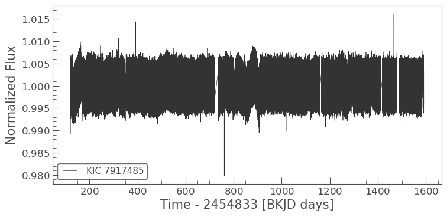
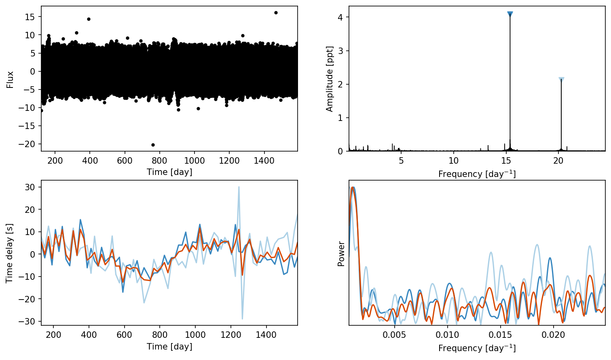
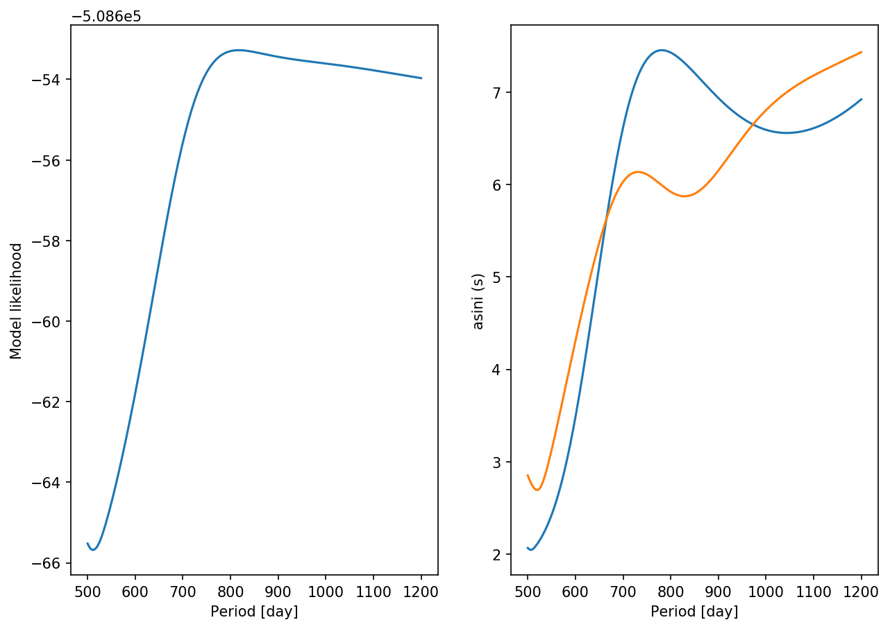

Recovering weak signals¶
[1]:
import numpy as np
import corner
import pandas as pd
import matplotlib.pyplot as plt
import exoplanet as xo
import pymc3 as pm
import lightkurve as lk
[2]:
%config IPython.matplotlib.backend = "retina"
from matplotlib import rcParams
rcParams["figure.dpi"] = 150
rcParams["savefig.dpi"] = 150
[3]:
lc = lk.search_lightcurvefile('KIC 7917485', mission='Kepler').download_all().PDCSAP_FLUX.stitch().remove_nans()
lc.plot()
[3]:
<matplotlib.axes._subplots.AxesSubplot at 0x1c255ecba8>

[10]:
from maelstrom import Maelstrom
ms = Maelstrom(lc.time, lc.flux, max_peaks=2)
ms.first_look(segment_size=20)
[10]:
array([<matplotlib.axes._subplots.AxesSubplot object at 0x1c2d4a3358>,
<matplotlib.axes._subplots.AxesSubplot object at 0x1c2d4ce940>,
<matplotlib.axes._subplots.AxesSubplot object at 0x1c2cb78ef0>,
<matplotlib.axes._subplots.AxesSubplot object at 0x1c2d6674e0>],
dtype=object)

[11]:
ms.plot_time_delay_periodogram_period()

[12]:
pg = ms.period_search()
[14]:
periods = np.linspace(500,1200,200)
pg.fit(periods)
100%|██████████| 200/200 [06:03<00:00, 1.82s/it]
100%|██████████| 200/200 [05:44<00:00, 1.72s/it]
[14]:
[[(-155083.24647851352,
{'period': array(500.),
'nu': array(15.38300258),
'phi_angle__': array([3.43877157, 2.85915844]),
'logasini_interval__': array(-2.14332722),
'drift': array(-7.50477356e-09),
'phi': array(0.87717196),
'logasini': array(0.72501325),
'w': array([ 2.96642259e+00, -2.81303317e+00, -1.01546935e-03]),
'phase': array(-0.75886393)}),
(-155083.2754858419,
{'period': array(503.51758794),
'nu': array(15.38300258),
'phi_angle__': array([2.14525483, 3.9240067 ]),
'logasini_interval__': array(-2.15575762),
'drift': array(-5.78975417e-09),
'phi': array(0.50030616),
'logasini': array(0.71698645),
'w': array([ 2.96598591e+00, -2.81349443e+00, -1.01575548e-03]),
'phase': array(-0.7590193)}),
(-155083.28386496255,
{'period': array(507.03517588),
'nu': array(15.38300258),
'phi_angle__': array([-0.08562281, 4.47131619]),
'logasini_interval__': array(-2.159895),
'drift': array(-2.17647397e-09),
'phi': array(-0.01914701),
'logasini': array(0.71433226),
'w': array([ 2.96510552e+00, -2.81442302e+00, -1.01586736e-03]),
'phase': array(-0.7593323)}),
(-155083.2655018796,
{'period': array(510.55276382),
'nu': array(15.38300258),
'phi_angle__': array([-2.13940433, 3.92720441]),
'logasini_interval__': array(-2.15271569),
'drift': array(1.74169178e-09),
'phi': array(-0.4988153),
'logasini': array(0.71894345),
'w': array([ 2.96417752e+00, -2.81540044e+00, -1.01562944e-03]),
'phase': array(-0.75966199)}),
(-155083.22862462586,
{'period': array(514.07035176),
'nu': array(15.38300258),
'phi_angle__': array([-3.31519499, 3.00157993]),
'logasini_interval__': array(-2.13919223),
'drift': array(4.29902914e-09),
'phi': array(-0.8350054),
'logasini': array(0.7277009),
'w': array([ 2.96357736e+00, -2.81603199e+00, -1.01531960e-03]),
'phase': array(-0.7598751)}),
(-155083.18106775952,
{'period': array(517.5879397),
'nu': array(15.38300258),
'phi_angle__': array([-3.93841616, 2.11869155]),
'logasini_interval__': array(-2.12281249),
'drift': array(5.84561526e-09),
'phi': array(-1.07724755),
'logasini': array(0.73843393),
'w': array([ 2.96321283e+00, -2.81641553e+00, -1.01506741e-03]),
'phase': array(-0.76000453)}),
(-155083.12651108316,
{'period': array(521.10552764),
'nu': array(15.38300258),
'phi_angle__': array([-4.26707067, 1.33868708]),
'logasini_interval__': array(-2.10472332),
'drift': array(6.82105771e-09),
'phi': array(-1.26679576),
'logasini': array(0.75044877),
'w': array([ 2.96298003e+00, -2.81666055e+00, -1.01487417e-03]),
'phase': array(-0.76008721)}),
(-155083.0666402403,
{'period': array(524.62311558),
'nu': array(15.38300258),
'phi_angle__': array([-4.42464902, 0.64998345]),
'logasini_interval__': array(-2.08533279),
'drift': array(7.46116284e-09),
'phi': array(-1.42493898),
'logasini': array(0.76351827),
'w': array([ 2.96282445e+00, -2.81682446e+00, -1.01472450e-03]),
'phase': array(-0.76014249)}),
(-155083.00229748027,
{'period': array(528.14070352),
'nu': array(15.38300258),
'phi_angle__': array([-4.47195161, 0.03611988]),
'logasini_interval__': array(-2.06484506),
'drift': array(7.88182594e-09),
'phi': array(-1.56271952),
'logasini': array(0.77754345),
'w': array([ 2.96271952e+00, -2.81693518e+00, -1.01460635e-03]),
'phase': array(-0.7601798)}),
(-155082.93393639024,
{'period': array(531.65829146),
'nu': array(15.38300258),
'phi_angle__': array([-4.44215688, -0.51692858]),
'logasini_interval__': array(-2.04332715),
'drift': array(8.15567077e-09),
'phi': array(-1.6866441),
'logasini': array(0.79251553),
'w': array([ 2.96264876e+00, -2.81701004e+00, -1.01451102e-03]),
'phase': array(-0.760205)}),
(-155082.86181239184,
{'period': array(535.1758794),
'nu': array(15.38300258),
'phi_angle__': array([-4.35481982, -1.01761457]),
'logasini_interval__': array(-2.02089703),
'drift': array(8.31228831e-09),
'phi': array(-1.80035271),
'logasini': array(0.80838882),
'w': array([ 2.96260544e+00, -2.81705612e+00, -1.01443328e-03]),
'phase': array(-0.76022047)}),
(-155082.7860706361,
{'period': array(538.69346734),
'nu': array(15.38300258),
'phi_angle__': array([-4.22269591, -1.47268074]),
'logasini_interval__': array(-1.99757455),
'drift': array(8.37997362e-09),
'phi': array(-1.90636041),
'logasini': array(0.82518534),
'w': array([ 2.96258315e+00, -2.81708014e+00, -1.01436922e-03]),
'phase': array(-0.76022848)}),
(-155082.70678985643,
{'period': array(542.21105528),
'nu': array(15.38300258),
'phi_angle__': array([-4.05475134, -1.88652897]),
'logasini_interval__': array(-1.97341917),
'drift': array(8.37223647e-09),
'phi': array(-2.00627087),
'logasini': array(0.84289886),
'w': array([ 2.96257884e+00, -2.81708532e+00, -1.01431630e-03]),
'phase': array(-0.76023013)}),
(-155082.62400620765,
{'period': array(545.72864322),
'nu': array(15.38300258),
'phi_angle__': array([-3.85754166, -2.26260299]),
'logasini_interval__': array(-1.94847459),
'drift': array(8.29941138e-09),
'phi': array(-2.10126007),
'logasini': array(0.86153375),
'w': array([ 2.96259016e+00, -2.81707412e+00, -1.01427263e-03]),
'phase': array(-0.76022623)}),
(-155082.53772689088,
{'period': array(549.24623116),
'nu': array(15.38300258),
'phi_angle__': array([-3.63628426, -2.60334975]),
'logasini_interval__': array(-1.92279267),
'drift': array(8.16793488e-09),
'phi': array(-2.19213825),
'logasini': array(0.88108744),
'w': array([ 2.96261565e+00, -2.81704806e+00, -1.01423689e-03]),
'phase': array(-0.76021732)}),
(-155082.4479385735,
{'period': array(552.7638191),
'nu': array(15.38300258),
'phi_angle__': array([-3.39522632, -2.91074494]),
'logasini_interval__': array(-1.89642983),
'drift': array(7.98208085e-09),
'phi': array(-2.27951614),
'logasini': array(0.90155243),
'w': array([ 2.96265434e+00, -2.81700818e+00, -1.01420815e-03]),
'phase': array(-0.76020373)}),
(-155082.35461289246,
{'period': array(556.28140704),
'nu': array(15.38300258),
'phi_angle__': array([-3.13797838, -3.18639163]),
'logasini_interval__': array(-1.86943965),
'drift': array(7.74498589e-09),
'phi': array(-2.36384937),
'logasini': array(0.92292151),
'w': array([ 2.96270550e+00, -2.81695524e+00, -1.01418570e-03]),
'phase': array(-0.76018572)}),
(-155082.25771043313,
{'period': array(559.79899497),
'nu': array(15.38300258),
'phi_angle__': array([-2.86761807, -3.43172952]),
'logasini_interval__': array(-1.84189537),
'drift': array(7.45826164e-09),
'phi': array(-2.44550703),
'logasini': array(0.94516939),
'w': array([ 2.96276877e+00, -2.81688960e+00, -1.01416901e-03]),
'phase': array(-0.76016342)}),
(-155082.1571837278,
{'period': array(563.31658291),
'nu': array(15.38300258),
'phi_angle__': array([-2.58686449, -3.64802832]),
'logasini_interval__': array(-1.81386203),
'drift': array(7.12276249e-09),
'phi': array(-2.5247767),
'logasini': array(0.96827395),
'w': array([ 2.96284397e+00, -2.81681147e+00, -1.01415770e-03]),
'phase': array(-0.76013689)}),
(-155082.0529797906,
{'period': array(566.83417085),
'nu': array(15.38300258),
'phi_angle__': array([-2.29824293, -3.836415 ]),
'logasini_interval__': array(-1.78540692),
'drift': array(6.73942195e-09),
'phi': array(-2.60186459),
'logasini': array(0.99220767),
'w': array([ 2.96293085e+00, -2.81672111e+00, -1.01415155e-03]),
'phase': array(-0.76010623)}),
(-155081.9450425698,
{'period': array(570.35175879),
'nu': array(15.38300258),
'phi_angle__': array([-2.00383483, -3.99808018]),
'logasini_interval__': array(-1.75662214),
'drift': array(6.30751574e-09),
'phi': array(-2.6769861),
'logasini': array(1.01691758),
'w': array([ 2.96302962e+00, -2.81661828e+00, -1.01415031e-03]),
'phase': array(-0.76007136)}),
(-155081.83331517986,
{'period': array(573.86934673),
'nu': array(15.38300258),
'phi_angle__': array([-1.7058224 , -4.13404634]),
'logasini_interval__': array(-1.72761092),
'drift': array(5.82517977e-09),
'phi': array(-2.75024787),
'logasini': array(1.04233485),
'w': array([ 2.96314068e+00, -2.81650258e+00, -1.01415394e-03]),
'phase': array(-0.76003213)}),
(-155081.7177420641,
{'period': array(577.38693467),
'nu': array(15.38300258),
'phi_angle__': array([-1.40547359, -4.24554374]),
'logasini_interval__': array(-1.69837602),
'drift': array(5.29637486e-09),
'phi': array(-2.8219014),
'logasini': array(1.06847421),
'w': array([ 2.96326321e+00, -2.81637485e+00, -1.01416215e-03]),
'phase': array(-0.75998883)}),
(-155081.59827152445,
{'period': array(580.90452261),
'nu': array(15.38300258),
'phi_angle__': array([-1.10491458, -4.33349325]),
'logasini_interval__': array(-1.66908319),
'drift': array(4.71542508e-09),
'phi': array(-2.89194102),
'logasini': array(1.09520009),
'w': array([ 2.96339845e+00, -2.81623380e+00, -1.01417512e-03]),
'phase': array(-0.75994103)}),
(-155081.47485788114,
{'period': array(584.42211055),
'nu': array(15.38300258),
'phi_angle__': array([-0.80532805, -4.3990239 ]),
'logasini_interval__': array(-1.63979983),
'drift': array(4.0827144e-09),
'phi': array(-2.96052794),
'logasini': array(1.12245705),
'w': array([ 2.96354639e+00, -2.81607942e+00, -1.01419271e-03]),
'phase': array(-0.75988873)}),
(-155081.34746401347,
{'period': array(587.93969849),
'nu': array(15.38300258),
'phi_angle__': array([-0.50842192, -4.44314236]),
'logasini_interval__': array(-1.61057514),
'drift': array(3.39743605e-09),
'phi': array(-3.02765975),
'logasini': array(1.15020189),
'w': array([ 2.96370714e+00, -2.81591161e+00, -1.01421513e-03]),
'phase': array(-0.75983189)}),
(-155081.2160637924,
{'period': array(591.45728643),
'nu': array(15.38300258),
'phi_angle__': array([-0.21524306, -4.46693212]),
'logasini_interval__': array(-1.58150913),
'drift': array(2.65855824e-09),
'phi': array(-3.09344401),
'logasini': array(1.17833774),
'w': array([ 2.96388099e+00, -2.81573005e+00, -1.01424233e-03]),
'phase': array(-0.7597704)}),
(-155081.0806444328,
{'period': array(594.97487437),
'nu': array(15.38300258),
'phi_angle__': array([ 0.07358825, -4.47153042]),
'logasini_interval__': array(-1.55270973),
'drift': array(1.864548e-09),
'phi': array(3.12513708),
'logasini': array(1.20675199),
'w': array([ 2.96406844e+00, -2.81553421e+00, -1.01427414e-03]),
'phase': array(-0.75970409)}),
(-155080.94120897798,
{'period': array(598.49246231),
'nu': array(15.38300258),
'phi_angle__': array([ 0.35652845, -4.45790169]),
'logasini_interval__': array(-1.52420148),
'drift': array(1.01508785e-09),
'phi': array(3.06178578),
'logasini': array(1.23540826),
'w': array([ 2.96426943e+00, -2.81532416e+00, -1.01431088e-03]),
'phase': array(-0.75963298)}),
(-155080.79777851305,
{'period': array(602.01005025),
'nu': array(15.38300258),
'phi_angle__': array([ 0.63287463, -4.4271262 ]),
'logasini_interval__': array(-1.49606593),
'drift': array(1.09406243e-10),
'phi': array(2.99960085),
'logasini': array(1.26420909),
'w': array([ 2.96448419e+00, -2.81509963e+00, -1.01435255e-03]),
'phase': array(-0.75955697)}),
(-155080.6503943376,
{'period': array(605.52763819),
'nu': array(15.38300258),
'phi_angle__': array([ 0.90180573, -4.38029577]),
'logasini_interval__': array(-1.46836248),
'drift': array(-8.51426719e-10),
'phi': array(2.93855179),
'logasini': array(1.29307402),
'w': array([ 2.96471248e+00, -2.81486088e+00, -1.01439920e-03]),
'phase': array(-0.75947618)}),
(-155080.4991198977,
{'period': array(609.04522613),
'nu': array(15.38300258),
'phi_angle__': array([ 1.16284691, -4.3183086 ]),
'logasini_interval__': array(-1.44114939),
'drift': array(-1.87155008e-09),
'phi': array(2.87854926),
'logasini': array(1.32191932),
'w': array([ 2.96495532e+00, -2.81460683e+00, -1.01445080e-03]),
'phase': array(-0.75939021)}),
(-155080.34404262123,
{'period': array(612.56281407),
'nu': array(15.38300258),
'phi_angle__': array([ 1.415149 , -4.24231974]),
'logasini_interval__': array(-1.41447498),
'drift': array(-2.94659828e-09),
'phi': array(2.81962097),
'logasini': array(1.35066782),
'w': array([ 2.96521163e+00, -2.81433860e+00, -1.01450750e-03]),
'phase': array(-0.75929946)}),
(-155080.18527525172,
{'period': array(616.08040201),
'nu': array(15.38300258),
'phi_angle__': array([ 1.65837768, -4.15328586]),
'logasini_interval__': array(-1.38837266),
'drift': array(-4.07738142e-09),
'phi': array(2.76169597),
'logasini': array(1.37925547),
'w': array([ 2.96548164e+00, -2.81405593e+00, -1.01456925e-03]),
'phase': array(-0.75920384)}),
(-155080.02295716954,
{'period': array(619.59798995),
'nu': array(15.38300258),
'phi_angle__': array([ 1.89200939, -4.05219519]),
'logasini_interval__': array(-1.36288941),
'drift': array(-5.26279888e-09),
'phi': array(2.70476591),
'logasini': array(1.40760088),
'w': array([ 2.96576509e+00, -2.81375912e+00, -1.01463609e-03]),
'phase': array(-0.75910345)}),
(-155079.85725511174,
{'period': array(623.11557789),
'nu': array(15.38300258),
'phi_angle__': array([ 2.11572087, -3.9400161 ]),
'logasini_interval__': array(-1.33805495),
'drift': array(-6.50117852e-09),
'phi': array(2.64879835),
'logasini': array(1.43563949),
'w': array([ 2.96606157e+00, -2.81344855e+00, -1.01470798e-03]),
'phase': array(-0.75899842)}),
(-155079.68836371097,
{'period': array(626.63316583),
'nu': array(15.38300258),
'phi_angle__': array([ 2.32925946, -3.81766306]),
'logasini_interval__': array(-1.3138919),
'drift': array(-7.79117554e-09),
'phi': array(2.59376006),
'logasini': array(1.46331344),
'w': array([ 2.96637078e+00, -2.81312454e+00, -1.01478488e-03]),
'phase': array(-0.75888887)}),
(-155079.51650559655,
{'period': array(630.15075377),
'nu': array(15.38300258),
'phi_angle__': array([ 2.53235651, -3.68608285]),
'logasini_interval__': array(-1.29043357),
'drift': array(-9.13017632e-09),
'phi': array(2.53964167),
'logasini': array(1.49055152),
'w': array([ 2.96669210e+00, -2.81278776e+00, -1.01486673e-03]),
'phase': array(-0.75877501)}),
(-155079.34193104113,
{'period': array(633.66834171),
'nu': array(15.38300258),
'phi_angle__': array([ 2.72488513, -3.54613545]),
'logasini_interval__': array(-1.267683),
'drift': array(-1.05140489e-08),
'phi': array(2.48641303),
'logasini': array(1.51731706),
'w': array([ 2.96702454e+00, -2.81243919e+00, -1.01495343e-03]),
'phase': array(-0.75865719)}),
(-155079.1649172577,
{'period': array(637.18592965),
'nu': array(15.38300258),
'phi_angle__': array([ 2.90675433, -3.39871666]),
'logasini_interval__': array(-1.24566176),
'drift': array(-1.19432363e-08),
'phi': array(2.43405825),
'logasini': array(1.54355182),
'w': array([ 2.96736820e+00, -2.81207875e+00, -1.01504487e-03]),
'phase': array(-0.75853537)}),
(-155078.98576724698,
{'period': array(640.70351759),
'nu': array(15.38300258),
'phi_angle__': array([ 3.07783985, -3.2445179 ]),
'logasini_interval__': array(-1.22438974),
'drift': array(-1.34103272e-08),
'phi': array(2.38255166),
'logasini': array(1.56919926),
'w': array([ 2.96772135e+00, -2.81170824e+00, -1.01514085e-03]),
'phase': array(-0.75841017)}),
(-155078.8048082459,
{'period': array(644.22110553),
'nu': array(15.38300258),
'phi_angle__': array([ 3.23817596, -3.0845459 ]),
'logasini_interval__': array(-1.20385794),
'drift': array(-1.49139287e-08),
'phi': array(2.33190118),
'logasini': array(1.59423823),
'w': array([ 2.96808360e+00, -2.81132807e+00, -1.01524127e-03]),
'phase': array(-0.75828172)}),
(-155078.62238973475,
{'period': array(647.73869347),
'nu': array(15.38300258),
'phi_angle__': array([ 3.38798775, -2.91916752]),
'logasini_interval__': array(-1.18409155),
'drift': array(-1.64493444e-08),
'phi': array(2.28199945),
'logasini': array(1.61860673),
'w': array([ 2.96845398e+00, -2.81093924e+00, -1.01534577e-03]),
'phase': array(-0.75815036)}),
(-155078.4388811416,
{'period': array(651.25628141),
'nu': array(15.38300258),
'phi_angle__': array([ 3.52711835, -2.74944182]),
'logasini_interval__': array(-1.16507474),
'drift': array(-1.80114915e-08),
'phi': array(2.23292103),
'logasini': array(1.64229396),
'w': array([ 2.96883114e+00, -2.81054316e+00, -1.01545426e-03]),
'phase': array(-0.75801658)}),
(-155078.25466909874,
{'period': array(654.77386935),
'nu': array(15.38300258),
'phi_angle__': array([ 3.6557669 , -2.57591856]),
'logasini_interval__': array(-1.14681169),
'drift': array(-1.95955618e-08),
'phi': array(2.18461479),
'logasini': array(1.66526585),
'w': array([ 2.96921400e+00, -2.81014098e+00, -1.01556642e-03]),
'phase': array(-0.75788075)}),
(-155078.07015447906,
{'period': array(658.29145729),
'nu': array(15.38300258),
'phi_angle__': array([ 3.77407651, -2.39923863]),
'logasini_interval__': array(-1.12930523),
'drift': array(-2.1196727e-08),
'phi': array(2.13706403),
'logasini': array(1.68749099),
'w': array([ 2.96960142e+00, -2.80973388e+00, -1.01568195e-03]),
'phase': array(-0.75774329)}),
(-155077.88574907565,
{'period': array(661.80904523),
'nu': array(15.38300258),
'phi_angle__': array([ 3.88221448, -2.2200024 ]),
'logasini_interval__': array(-1.11254762),
'drift': array(-2.28097356e-08),
'phi': array(2.09025193),
'logasini': array(1.70895268),
'w': array([ 2.96999214e+00, -2.80932317e+00, -1.01580056e-03]),
'phase': array(-0.75760463)}),
(-155077.7018722387,
{'period': array(665.32663317),
'nu': array(15.38300258),
'phi_angle__': array([ 3.98037937, -2.03877169]),
'logasini_interval__': array(-1.09653369),
'drift': array(-2.4429136e-08),
'phi': array(2.04416049),
'logasini': array(1.72963243),
'w': array([ 2.97038490e+00, -2.80891021e+00, -1.01592191e-03]),
'phase': array(-0.75746523)}),
(-155077.51894709497,
{'period': array(668.84422111),
'nu': array(15.38300258),
'phi_angle__': array([ 4.06878122, -1.85607643]),
'logasini_interval__': array(-1.08125732),
'drift': array(-2.60494232e-08),
'phi': array(1.99877354),
'logasini': array(1.74951443),
'w': array([ 2.97077838e+00, -2.80849635e+00, -1.01604564e-03]),
'phase': array(-0.75732554)}),
(-155077.33739697697,
{'period': array(672.36180905),
'nu': array(15.38300258),
'phi_angle__': array([ 4.14765578, -1.67241101]),
'logasini_interval__': array(-1.06670806),
'drift': array(-2.76650256e-08),
'phi': array(1.95407408),
'logasini': array(1.76858998),
'w': array([ 2.97117128e+00, -2.80808299e+00, -1.01617141e-03]),
'phase': array(-0.75718604)}),
(-155077.15764157567,
{'period': array(675.87939698),
'nu': array(15.38300258),
'phi_angle__': array([ 4.21724177, -1.48826274]),
'logasini_interval__': array(-1.05286871),
'drift': array(-2.92722445e-08),
'phi': array(1.91005193),
'logasini': array(1.7868609),
'w': array([ 2.97156270e+00, -2.80767106e+00, -1.01629886e-03]),
'phase': array(-0.75704705)}),
(-155076.98009336708,
{'period': array(679.39698492),
'nu': array(15.38300258),
'phi_angle__': array([ 4.27780574, -1.3039865 ]),
'logasini_interval__': array(-1.03974795),
'drift': array(-3.08601715e-08),
'phi': array(1.86667476),
'logasini': array(1.80429621),
'w': array([ 2.97195012e+00, -2.80726321e+00, -1.01642755e-03]),
'phase': array(-0.75690945)}),
(-155076.805153961,
{'period': array(682.91457286),
'nu': array(15.38300258),
'phi_angle__': array([ 4.32960373, -1.12005838]),
'logasini_interval__': array(-1.02732073),
'drift': array(-3.24284433e-08),
'phi': array(1.82394413),
'logasini': array(1.820911),
'w': array([ 2.97233342e+00, -2.80685960e+00, -1.01655713e-03]),
'phase': array(-0.7567733)}),
(-155076.63321076916,
{'period': array(686.4321608),
'nu': array(15.38300258),
'phi_angle__': array([ 4.37287197, -0.93685006]),
'logasini_interval__': array(-1.01556476),
'drift': array(-3.3972403e-08),
'phi': array(1.78184726),
'logasini': array(1.83671847),
'w': array([ 2.97271148e+00, -2.80646139e+00, -1.01668727e-03]),
'phase': array(-0.75663899)}),
(-155076.46463381298,
{'period': array(689.94974874),
'nu': array(15.38300258),
'phi_angle__': array([ 4.40801322, -0.75459888]),
'logasini_interval__': array(-1.00448331),
'drift': array(-3.54810142e-08),
'phi': array(1.74034087),
'logasini': array(1.85169884),
'w': array([ 2.97308176e+00, -2.80607127e+00, -1.01681751e-03]),
'phase': array(-0.75650742)}),
(-155076.29977286293,
{'period': array(693.46733668),
'nu': array(15.38300258),
'phi_angle__': array([ 4.4351817, -0.5737208]),
'logasini_interval__': array(-0.99404711),
'drift': array(-3.6955302e-08),
'phi': array(1.69943874),
'logasini': array(1.86587753),
'w': array([ 2.97344446e+00, -2.80568904e+00, -1.01694753e-03]),
'phase': array(-0.75637853)}),
(-155076.13895490966,
{'period': array(696.98492462),
'nu': array(15.38300258),
'phi_angle__': array([ 4.45470462, -0.39446906]),
'logasini_interval__': array(-0.98424497),
'drift': array(-3.83885469e-08),
'phi': array(1.65911707),
'logasini': array(1.87925691),
'w': array([ 2.97379799e+00, -2.80531638e+00, -1.01707696e-03]),
'phase': array(-0.75625288)}),
(-155075.9824819557,
{'period': array(700.50251256),
'nu': array(15.38300258),
'phi_angle__': array([ 4.46686302, -0.21710219]),
'logasini_interval__': array(-0.9750596),
'drift': array(-3.97764169e-08),
'phi': array(1.61936094),
'logasini': array(1.89184881),
'w': array([ 2.97414135e+00, -2.80495435e+00, -1.01720544e-03]),
'phase': array(-0.75613084)}),
(-155075.8306292086,
{'period': array(704.0201005),
'nu': array(15.38300258),
'phi_angle__': array([ 4.47194225, -0.04185961]),
'logasini_interval__': array(-0.96647468),
'drift': array(-4.11155623e-08),
'phi': array(1.58015655),
'logasini': array(1.90366497),
'w': array([ 2.97447374e+00, -2.80460382e+00, -1.01733264e-03]),
'phase': array(-0.75601268)}),
(-155075.6836437251,
{'period': array(707.53768844),
'nu': array(15.38300258),
'phi_angle__': array([4.47021571, 0.13104041]),
'logasini_interval__': array(-0.95846878),
'drift': array(-4.24018139e-08),
'phi': array(1.54149061),
'logasini': array(1.91472529),
'w': array([ 2.97479416e+00, -2.80426584e+00, -1.01745827e-03]),
'phase': array(-0.75589875)}),
(-155075.54174338508,
{'period': array(711.05527638),
'nu': array(15.38300258),
'phi_angle__': array([4.46196732, 0.30140991]),
'logasini_interval__': array(-0.95102692),
'drift': array(-4.3632027e-08),
'phi': array(1.50334789),
'logasini': array(1.92504182),
'w': array([ 2.97510188e+00, -2.80394119e+00, -1.01758199e-03]),
'phase': array(-0.75578934)}),
(-155075.4051162867,
{'period': array(714.57286432),
'nu': array(15.38300258),
'phi_angle__': array([4.44746804, 0.46907201]),
'logasini_interval__': array(-0.94412877),
'drift': array(-4.48033799e-08),
'phi': array(1.46571536),
'logasini': array(1.93463503),
'w': array([ 2.97539623e+00, -2.80363059e+00, -1.01770356e-03]),
'phase': array(-0.75568467)}),
(-155075.27392053243,
{'period': array(718.09045226),
'nu': array(15.38300258),
'phi_angle__': array([4.42698734, 0.63387029]),
'logasini_interval__': array(-0.93775662),
'drift': array(-4.59133065e-08),
'phi': array(1.42857973),
'logasini': array(1.94352263),
'w': array([ 2.97567658e+00, -2.80333472e+00, -1.01782271e-03]),
'phase': array(-0.75558497)}),
(-155075.1482844008,
{'period': array(721.6080402),
'nu': array(15.38300258),
'phi_angle__': array([4.40078851, 0.79566307]),
'logasini_interval__': array(-0.93189156),
'drift': array(-4.6959682e-08),
'phi': array(1.39192849),
'logasini': array(1.95172488),
'w': array([ 2.97594243e+00, -2.80305411e+00, -1.01793920e-03]),
'phase': array(-0.75549042)}),
(-155075.0283067833,
{'period': array(725.12562814),
'nu': array(15.38300258),
'phi_angle__': array([4.36912576, 0.95433237]),
'logasini_interval__': array(-0.92650869),
'drift': array(-4.79410943e-08),
'phi': array(1.35574748),
'logasini': array(1.95927124),
'w': array([ 2.97619343e+00, -2.80278914e+00, -1.01805287e-03]),
'phase': array(-0.75540114)}),
(-155074.91405807826,
{'period': array(728.64321608),
'nu': array(15.38300258),
'phi_angle__': array([4.33225176, 1.10976831]),
'logasini_interval__': array(-0.92159472),
'drift': array(-4.88557011e-08),
'phi': array(1.32002442),
'logasini': array(1.96617559),
'w': array([ 2.97642914e+00, -2.80254030e+00, -1.01816349e-03]),
'phase': array(-0.7553173)}),
(-155074.80558111842,
{'period': array(732.16080402),
'nu': array(15.38300258),
'phi_angle__': array([4.29041526, 1.26187712]),
'logasini_interval__': array(-0.91712871),
'drift': array(-4.97027493e-08),
'phi': array(1.28474697),
'logasini': array(1.97246324),
'w': array([ 2.97664935e+00, -2.80230779e+00, -1.01827093e-03]),
'phase': array(-0.75523897)}),
(-155074.70289259707,
{'period': array(735.67839196),
'nu': array(15.38300258),
'phi_angle__': array([4.24384961, 1.41058161]),
'logasini_interval__': array(-0.9130903),
'drift': array(-5.04815705e-08),
'phi': array(1.24990171),
'logasini': array(1.97815926),
'w': array([ 2.97685390e+00, -2.80209182e+00, -1.01837506e-03]),
'phase': array(-0.75516621)}),
(-155074.6059844136,
{'period': array(739.1959799),
'nu': array(15.38300258),
'phi_angle__': array([4.19278752, 1.55578142]),
'logasini_interval__': array(-0.90946422),
'drift': array(-5.11915301e-08),
'phi': array(1.21548318),
'logasini': array(1.98328208),
'w': array([ 2.97704261e+00, -2.80189256e+00, -1.01847573e-03]),
'phase': array(-0.75509908)}),
(-155074.5148254722,
{'period': array(742.71356784),
'nu': array(15.38300258),
'phi_angle__': array([4.13737521, 1.69741946]),
'logasini_interval__': array(-0.90621707),
'drift': array(-5.18333795e-08),
'phi': array(1.18147241),
'logasini': array(1.98787627),
'w': array([ 2.97721563e+00, -2.80170987e+00, -1.01857296e-03]),
'phase': array(-0.75503753)}),
(-155074.42936325032,
{'period': array(746.23115578),
'nu': array(15.38300258),
'phi_angle__': array([4.07804822, 1.8356028 ]),
'logasini_interval__': array(-0.90335556),
'drift': array(-5.24058944e-08),
'phi': array(1.1478443),
'logasini': array(1.99193011),
'w': array([ 2.97737266e+00, -2.80154409e+00, -1.01866656e-03]),
'phase': array(-0.75498168)}),
(-155074.34952578525,
{'period': array(749.74874372),
'nu': array(15.38300258),
'phi_angle__': array([4.0148062 , 1.97010943]),
'logasini_interval__': array(-0.90083973),
'drift': array(-5.29117567e-08),
'phi': array(1.11460752),
'logasini': array(1.99549828),
'w': array([ 2.97751428e+00, -2.80139458e+00, -1.01875657e-03]),
'phase': array(-0.7549313)}),
(-155074.2752234636,
{'period': array(753.26633166),
'nu': array(15.38300258),
'phi_angle__': array([3.94790982, 2.10095539]),
'logasini_interval__': array(-0.89866021),
'drift': array(-5.3349945e-08),
'phi': array(1.08174589),
'logasini': array(1.99859253),
'w': array([ 2.97764025e+00, -2.80126163e+00, -1.01884294e-03]),
'phase': array(-0.7548865)}),
(-155074.20635088344,
{'period': array(756.7839196),
'nu': array(15.38300258),
'phi_angle__': array([3.87755321, 2.22813578]),
'logasini_interval__': array(-0.89680239),
'drift': array(-5.37220715e-08),
'phi': array(1.04924454),
'logasini': array(2.00123231),
'w': array([ 2.97775090e+00, -2.80114488e+00, -1.01892563e-03]),
'phase': array(-0.75484716)}),
(-155074.14278878854,
{'period': array(760.30150754),
'nu': array(15.38300258),
'phi_angle__': array([3.80393274, 2.35160923]),
'logasini_interval__': array(-0.89523602),
'drift': array(-5.40296143e-08),
'phi': array(1.01709842),
'logasini': array(2.00345957),
'w': array([ 2.97784656e+00, -2.80104399e+00, -1.01900475e-03]),
'phase': array(-0.75481315)}),
(-155074.08440583295,
{'period': array(763.81909548),
'nu': array(15.38300258),
'phi_angle__': array([3.72721823, 2.47139979]),
'logasini_interval__': array(-0.89395679),
'drift': array(-5.42744141e-08),
'phi': array(0.98528913),
'logasini': array(2.00527964),
'w': array([ 2.97792760e+00, -2.80095855e+00, -1.01908025e-03]),
'phase': array(-0.75478435)}),
(-155074.0310603866,
{'period': array(767.33668342),
'nu': array(15.38300258),
'phi_angle__': array([3.6475797 , 2.58750118]),
'logasini_interval__': array(-0.89294682),
'drift': array(-5.44541522e-08),
'phi': array(0.95380621),
'logasini': array(2.00671728),
'w': array([ 2.97799349e+00, -2.80088917e+00, -1.01915217e-03]),
'phase': array(-0.75476094)}),
(-155073.98260216598,
{'period': array(770.85427136),
'nu': array(15.38300258),
'phi_angle__': array([3.56518706, 2.69989657]),
'logasini_interval__': array(-0.89218759),
'drift': array(-5.45751074e-08),
'phi': array(0.92264306),
'logasini': array(2.00779843),
'w': array([ 2.97804562e+00, -2.80083434e+00, -1.01922060e-03]),
'phase': array(-0.75474244)}),
(-155073.9388739376,
{'period': array(774.3718593),
'nu': array(15.38300258),
'phi_angle__': array([3.48013579, 2.80861737]),
'logasini_interval__': array(-0.89167837),
'drift': array(-5.46365137e-08),
'phi': array(0.89177593),
'logasini': array(2.00852374),
'w': array([ 2.97808378e+00, -2.80079430e+00, -1.01928551e-03]),
'phase': array(-0.75472891)}),
(-155073.89971287796,
{'period': array(777.88944724),
'nu': array(15.38300258),
'phi_angle__': array([3.39275892, 2.91362103]),
'logasini_interval__': array(-0.89136399),
'drift': array(-5.46425725e-08),
'phi': array(0.86122917),
'logasini': array(2.00897161),
'w': array([ 2.97810898e+00, -2.80076799e+00, -1.01934720e-03]),
'phase': array(-0.75472)}),
(-155073.86495209104,
{'period': array(781.40703518),
'nu': array(15.38300258),
'phi_angle__': array([3.3030198 , 3.01497267]),
'logasini_interval__': array(-0.8912709),
'drift': array(-5.45927797e-08),
'phi': array(0.83095817),
'logasini': array(2.00910424),
'w': array([ 2.97812100e+00, -2.80075563e+00, -1.01940553e-03]),
'phase': array(-0.75471578)}),
(-155073.83442179856,
{'period': array(784.92462312),
'nu': array(15.38300258),
'phi_angle__': array([3.21111971, 3.11267335]),
'logasini_interval__': array(-0.89137193),
'drift': array(-5.44905606e-08),
'phi': array(0.80096452),
'logasini': array(2.0089603),
'w': array([ 2.97812061e+00, -2.80075640e+00, -1.01946068e-03]),
'phase': array(-0.75471598)}),
(-155073.8079505733,
{'period': array(788.44221106),
'nu': array(15.38300258),
'phi_angle__': array([3.11718777, 3.2067336 ]),
'logasini_interval__': array(-0.8916544),
'drift': array(-5.43357921e-08),
'phi': array(0.77123925),
'logasini': array(2.00855789),
'w': array([ 2.97810778e+00, -2.80077036e+00, -1.01951272e-03]),
'phase': array(-0.75472062)}),
(-155073.78536630791,
{'period': array(791.95979899),
'nu': array(15.38300258),
'phi_angle__': array([3.0213562 , 3.29718163]),
'logasini_interval__': array(-0.89210552),
'drift': array(-5.41325558e-08),
'phi': array(0.7417725),
'logasini': array(2.00791531),
'w': array([ 2.97808340e+00, -2.80079654e+00, -1.01956178e-03]),
'phase': array(-0.75472937)}),
(-155073.76649725225,
{'period': array(795.47738693),
'nu': array(15.38300258),
'phi_angle__': array([2.92374643, 3.38403705]),
'logasini_interval__': array(-0.89271352),
'drift': array(-5.38821533e-08),
'phi': array(0.71255542),
'logasini': array(2.00704946),
'w': array([ 2.97804774e+00, -2.80083466e+00, -1.01960794e-03]),
'phase': array(-0.75474214)}),
(-155073.751172803,
{'period': array(798.99497487),
'nu': array(15.38300258),
'phi_angle__': array([2.82447641, 3.46732362]),
'logasini_interval__': array(-0.8934669),
'drift': array(-5.35865733e-08),
'phi': array(0.68357926),
'logasini': array(2.00597691),
'w': array([ 2.97800125e+00, -2.80088426e+00, -1.01965132e-03]),
'phase': array(-0.75475877)}),
(-155073.73922422613,
{'period': array(802.51256281),
'nu': array(15.38300258),
'phi_angle__': array([2.72366292, 3.54700735]),
'logasini_interval__': array(-0.89435253),
'drift': array(-5.32467197e-08),
'phi': array(0.65484413),
'logasini': array(2.00471648),
'w': array([ 2.97794411e+00, -2.80094513e+00, -1.01969202e-03]),
'phase': array(-0.75477919)}),
(-155073.7304852917,
{'period': array(806.03015075),
'nu': array(15.38300258),
'phi_angle__': array([2.62140659, 3.62328898]),
'logasini_interval__': array(-0.89536739),
'drift': array(-5.28677088e-08),
'phi': array(0.6263165),
'logasini': array(2.00327273),
'w': array([ 2.97787741e+00, -2.80101611e+00, -1.01973017e-03]),
'phase': array(-0.75480301)}),
(-155073.7247929025,
{'period': array(809.54773869),
'nu': array(15.38300258),
'phi_angle__': array([2.51782602, 3.6960145 ]),
'logasini_interval__': array(-0.89649318),
'drift': array(-5.24485554e-08),
'phi': array(0.59801542),
'logasini': array(2.00167188),
'w': array([ 2.97780098e+00, -2.80109741e+00, -1.01976586e-03]),
'phase': array(-0.75483031)}),
(-155073.72198736118,
{'period': array(813.06532663),
'nu': array(15.38300258),
'phi_angle__': array([2.41299882, 3.76528946]),
'logasini_interval__': array(-0.89772547),
'drift': array(-5.19916731e-08),
'phi': array(0.56991843),
'logasini': array(1.99992045),
'w': array([ 2.97771529e+00, -2.80118849e+00, -1.01979922e-03]),
'phase': array(-0.7548609)}),
(-155073.72191302138,
{'period': array(816.58291457),
'nu': array(15.38300258),
'phi_angle__': array([2.307049 , 3.83112509]),
'logasini_interval__': array(-0.89905248),
'drift': array(-5.14993476e-08),
'phi': array(0.54202513),
'logasini': array(1.99803542),
'w': array([ 2.97762088e+00, -2.80128881e+00, -1.01983034e-03]),
'phase': array(-0.75489459)}),
(-155073.72441835984,
{'period': array(820.10050251),
'nu': array(15.38300258),
'phi_angle__': array([2.2000611 , 3.89354995]),
'logasini_interval__': array(-0.90046744),
'drift': array(-5.09733179e-08),
'phi': array(0.51432652),
'logasini': array(1.99602661),
'w': array([ 2.97751811e+00, -2.80139798e+00, -1.01985932e-03]),
'phase': array(-0.75493127)}),
(-155073.72935632657,
{'period': array(823.61809045),
'nu': array(15.38300258),
'phi_angle__': array([2.0921271 , 3.95259466]),
'logasini_interval__': array(-0.90196182),
'drift': array(-5.04151887e-08),
'phi': array(0.48681563),
'logasini': array(1.99390635),
'w': array([ 2.97740732e+00, -2.80151562e+00, -1.01988629e-03]),
'phase': array(-0.75497079)}),
(-155073.73658457494,
{'period': array(827.13567839),
'nu': array(15.38300258),
'phi_angle__': array([1.98333604, 4.00828868]),
'logasini_interval__': array(-0.90352804),
'drift': array(-4.98267295e-08),
'phi': array(0.45948594),
'logasini': array(1.99168562),
'w': array([ 2.97728891e+00, -2.80164132e+00, -1.01991134e-03]),
'phase': array(-0.75501304)}),
(-155073.74596550528,
{'period': array(830.65326633),
'nu': array(15.38300258),
'phi_angle__': array([1.87377679, 4.06066096]),
'logasini_interval__': array(-0.90515826),
'drift': array(-4.92096296e-08),
'phi': array(0.43233176),
'logasini': array(1.98937569),
'w': array([ 2.97716324e+00, -2.80177470e+00, -1.01993457e-03]),
'phase': array(-0.75505786)}),
(-155073.7573663812,
{'period': array(834.17085427),
'nu': array(15.38300258),
'phi_angle__': array([1.76353185, 4.1097391 ]),
'logasini_interval__': array(-0.90684712),
'drift': array(-4.85652679e-08),
'phi': array(0.40534705),
'logasini': array(1.98698435),
'w': array([ 2.97703061e+00, -2.80191544e+00, -1.01995607e-03]),
'phase': array(-0.75510517)}),
(-155073.77065945463,
{'period': array(837.68844221),
'nu': array(15.38300258),
'phi_angle__': array([1.65266402, 4.15554309]),
'logasini_interval__': array(-0.9085877),
'drift': array(-4.78954358e-08),
'phi': array(0.37852299),
'logasini': array(1.98452159),
'w': array([ 2.97689140e+00, -2.80206313e+00, -1.01997596e-03]),
'phase': array(-0.75515481)}),
(-155073.7857218994,
{'period': array(841.20603015),
'nu': array(15.38300258),
'phi_angle__': array([1.54132015, 4.19813437]),
'logasini_interval__': array(-0.91037098),
'drift': array(-4.72013064e-08),
'phi': array(0.35186556),
'logasini': array(1.98200029),
'w': array([ 2.97674591e+00, -2.80221745e+00, -1.01999429e-03]),
'phase': array(-0.75520669)}),
(-155073.8024358299,
{'period': array(844.72361809),
'nu': array(15.38300258),
'phi_angle__': array([1.42949738, 4.2375206 ]),
'logasini_interval__': array(-0.91219534),
'drift': array(-4.64841713e-08),
'phi': array(0.32535479),
'logasini': array(1.97942289),
'w': array([ 2.97659437e+00, -2.80237817e+00, -1.02001119e-03]),
'phase': array(-0.75526072)}),
(-155073.82068822728,
{'period': array(848.24120603),
'nu': array(15.38300258),
'phi_angle__': array([1.3173431 , 4.27371119]),
'logasini_interval__': array(-0.91405123),
'drift': array(-4.57462413e-08),
'phi': array(0.29900225),
'logasini': array(1.97680301),
'w': array([ 2.97643732e+00, -2.80254469e+00, -1.02002671e-03]),
'phase': array(-0.75531671)}),
(-155073.8403709589,
{'period': array(851.75879397),
'nu': array(15.38300258),
'phi_angle__': array([1.20483553, 4.30679575]),
'logasini_interval__': array(-0.91594511),
'drift': array(-4.4986953e-08),
'phi': array(0.27277889),
'logasini': array(1.97413164),
'w': array([ 2.97627454e+00, -2.80271727e+00, -1.02004091e-03]),
'phase': array(-0.75537474)}),
(-155073.86138057883,
{'period': array(855.27638191),
'nu': array(15.38300258),
'phi_angle__': array([1.09220961, 4.33669844]),
'logasini_interval__': array(-0.91784989),
'drift': array(-4.42103342e-08),
'phi': array(0.24672171),
'logasini': array(1.97144709),
'w': array([ 2.97610710e+00, -2.80289476e+00, -1.02005392e-03]),
'phase': array(-0.75543443)}),
(-155073.8836183941,
{'period': array(858.79396985),
'nu': array(15.38300258),
'phi_angle__': array([0.97941939, 4.36356913]),
'logasini_interval__': array(-0.91977139),
'drift': array(-4.3415478e-08),
'phi': array(0.22079444),
'logasini': array(1.96874119),
'w': array([ 2.97593466e+00, -2.80307751e+00, -1.02006585e-03]),
'phase': array(-0.75549589)}),
(-155073.90699017287,
{'period': array(862.31155779),
'nu': array(15.38300258),
'phi_angle__': array([0.86655853, 4.38737624]),
'logasini_interval__': array(-0.92171243),
'drift': array(-4.26037351e-08),
'phi': array(0.19500191),
'logasini': array(1.96601003),
'w': array([ 2.97575756e+00, -2.80326519e+00, -1.02007665e-03]),
'phase': array(-0.75555901)}),
(-155073.93140622124,
{'period': array(865.82914573),
'nu': array(15.38300258),
'phi_angle__': array([0.75376362, 4.4081397 ]),
'logasini_interval__': array(-0.92366008),
'drift': array(-4.17768871e-08),
'phi': array(0.16935568),
'logasini': array(1.96327188),
'w': array([ 2.97557625e+00, -2.80345729e+00, -1.02008643e-03]),
'phase': array(-0.75562362)}),
(-155073.95678104696,
{'period': array(869.34673367),
'nu': array(15.38300258),
'phi_angle__': array([0.64090176, 4.42598549]),
'logasini_interval__': array(-0.92561681),
'drift': array(-4.09344561e-08),
'phi': array(0.14380475),
'logasini': array(1.96052329),
'w': array([ 2.97539045e+00, -2.80365412e+00, -1.02009536e-03]),
'phase': array(-0.75568983)}),
(-155073.9830334321,
{'period': array(872.86432161),
'nu': array(15.38300258),
'phi_angle__': array([0.52829526, 4.44082246]),
'logasini_interval__': array(-0.92757586),
'drift': array(-4.00787141e-08),
'phi': array(0.1184069),
'logasini': array(1.95777375),
'w': array([ 2.97520089e+00, -2.80385490e+00, -1.02010330e-03]),
'phase': array(-0.75575737)}),
(-155074.01008620596,
{'period': array(876.38190955),
'nu': array(15.38300258),
'phi_angle__': array([0.41589064, 4.45275657]),
'logasini_interval__': array(-0.92953163),
'drift': array(-3.92102564e-08),
'phi': array(0.09313053),
'logasini': array(1.95503115),
'w': array([ 2.97500762e+00, -2.80405958e+00, -1.02011045e-03]),
'phase': array(-0.75582623)}),
(-155074.03786607223,
{'period': array(879.89949749),
'nu': array(15.38300258),
'phi_angle__': array([0.30377315, 4.46180702]),
'logasini_interval__': array(-0.93148211),
'drift': array(-3.83298663e-08),
'phi': array(0.06797808),
'logasini': array(1.95229827),
'w': array([ 2.97481082e+00, -2.80426797e+00, -1.02011681e-03]),
'phase': array(-0.75589634)}),
(-155074.06630358362,
{'period': array(883.41708543),
'nu': array(15.38300258),
'phi_angle__': array([0.19204232, 4.46801687]),
'logasini_interval__': array(-0.93341767),
'drift': array(-3.74374864e-08),
'phi': array(0.04295512),
'logasini': array(1.94958861),
'w': array([ 2.97461053e+00, -2.80448002e+00, -1.02012248e-03]),
'phase': array(-0.75596769)}),
(-155074.0953328507,
{'period': array(886.93467337),
'nu': array(15.38300258),
'phi_angle__': array([0.08065362, 4.47138553]),
'logasini_interval__': array(-0.93535124),
'drift': array(-3.65363797e-08),
'phi': array(0.01803577),
'logasini': array(1.946884),
'w': array([ 2.97440739e+00, -2.80469505e+00, -1.02012743e-03]),
'phase': array(-0.75604004)}),
(-155074.12489158567,
{'period': array(890.45226131),
'nu': array(15.38300258),
'phi_angle__': array([-0.03019546, 4.47202665]),
'logasini_interval__': array(-0.93726856),
'drift': array(-3.56241378e-08),
'phi': array(-0.00675197),
'logasini': array(1.94420437),
'w': array([ 2.97420098e+00, -2.80491352e+00, -1.02013172e-03]),
'phase': array(-0.75611356)}),
(-155074.1549208507,
{'period': array(893.96984925),
'nu': array(15.38300258),
'phi_angle__': array([-0.14047897, 4.46992849]),
'logasini_interval__': array(-0.93916764),
'drift': array(-3.47041226e-08),
'phi': array(-0.03141723),
'logasini': array(1.94155246),
'w': array([ 2.97399205e+00, -2.80513463e+00, -1.02013540e-03]),
'phase': array(-0.75618797)}),
(-155074.18536492437,
{'period': array(897.48743719),
'nu': array(15.38300258),
'phi_angle__': array([-0.25015415, 4.46513442]),
'logasini_interval__': array(-0.9410454),
'drift': array(-3.37751451e-08),
'phi': array(-0.05596537),
'logasini': array(1.93893248),
'w': array([ 2.97378032e+00, -2.80535866e+00, -1.02013852e-03]),
'phase': array(-0.75626337)}),
(-155074.21617121375,
{'period': array(901.00502513),
'nu': array(15.38300258),
'phi_angle__': array([-0.35915773, 4.45769063]),
'logasini_interval__': array(-0.94290059),
'drift': array(-3.28384179e-08),
'phi': array(-0.08039669),
'logasini': array(1.93634611),
'w': array([ 2.97356609e+00, -2.80558531e+00, -1.02014113e-03]),
'phase': array(-0.75633966)}),
(-155074.24729012392,
{'period': array(904.52261307),
'nu': array(15.38300258),
'phi_angle__': array([-0.46742209, 4.44764169]),
'logasini_interval__': array(-0.94473085),
'drift': array(-3.18944225e-08),
'phi': array(-0.10470999),
'logasini': array(1.93379655),
'w': array([ 2.97334947e+00, -2.80581445e+00, -1.02014323e-03]),
'phase': array(-0.75641679)}),
(-155074.27867492588,
{'period': array(908.04020101),
'nu': array(15.38300258),
'phi_angle__': array([-0.57491142, 4.43503347]),
'logasini_interval__': array(-0.94653442),
'drift': array(-3.09443311e-08),
'phi': array(-0.1289107),
'logasini': array(1.93128619),
'w': array([ 2.97313074e+00, -2.80604579e+00, -1.02014487e-03]),
'phase': array(-0.75649467)}),
(-155074.31028160226,
{'period': array(911.55778894),
'nu': array(15.38300258),
'phi_angle__': array([-0.68152573, 4.41990546]),
'logasini_interval__': array(-0.9483082),
'drift': array(-2.99873212e-08),
'phi': array(-0.15298974),
'logasini': array(1.92881924),
'w': array([ 2.97290975e+00, -2.80627949e+00, -1.02014607e-03]),
'phase': array(-0.75657334)}),
(-155074.34206875705,
{'period': array(915.07537688),
'nu': array(15.38300258),
'phi_angle__': array([-0.78719184, 4.40230951]),
'logasini_interval__': array(-0.95005003),
'drift': array(-2.90241912e-08),
'phi': array(-0.17694332),
'logasini': array(1.9263986),
'w': array([ 2.97268673e+00, -2.80651530e+00, -1.02014683e-03]),
'phase': array(-0.75665273)}),
(-155074.37399754304,
{'period': array(918.59296482),
'nu': array(15.38300258),
'phi_angle__': array([-0.89195465, 4.38228017]),
'logasini_interval__': array(-0.95175995),
'drift': array(-2.80564753e-08),
'phi': array(-0.20079387),
'logasini': array(1.92402412),
'w': array([ 2.97246194e+00, -2.80675293e+00, -1.02014723e-03]),
'phase': array(-0.75673274)}),
(-155074.40603145683,
{'period': array(922.11055276),
'nu': array(15.38300258),
'phi_angle__': array([-0.99563475, 4.35989541]),
'logasini_interval__': array(-0.95343387),
'drift': array(-2.70834495e-08),
'phi': array(-0.2245122),
'logasini': array(1.92170138),
'w': array([ 2.97223537e+00, -2.80699243e+00, -1.02014723e-03]),
'phase': array(-0.75681339)}),
(-155074.43813630185,
{'period': array(925.6281407),
'nu': array(15.38300258),
'phi_angle__': array([-1.09825703, 4.3351882 ]),
'logasini_interval__': array(-0.9550712),
'drift': array(-2.61061406e-08),
'phi': array(-0.24811548),
'logasini': array(1.91943107),
'w': array([ 2.97200719e+00, -2.80723358e+00, -1.02014690e-03]),
'phase': array(-0.7568946)}),
(-155074.47028004765,
{'period': array(929.14572864),
'nu': array(15.38300258),
'phi_angle__': array([-1.19975601, 4.30819898]),
'logasini_interval__': array(-0.9566709),
'drift': array(-2.51244789e-08),
'phi': array(-0.27160054),
'logasini': array(1.91721453),
'w': array([ 2.97177741e+00, -2.80747639e+00, -1.02014624e-03]),
'phase': array(-0.75697637)}),
(-155074.5024327338,
{'period': array(932.66331658),
'nu': array(15.38300258),
'phi_angle__': array([-1.30008602, 4.27899243]),
'logasini_interval__': array(-0.95823083),
'drift': array(-2.41391058e-08),
'phi': array(-0.29496679),
'logasini': array(1.91505462),
'w': array([ 2.97154621e+00, -2.80772066e+00, -1.02014527e-03]),
'phase': array(-0.75705864)}),
(-155074.5345664185,
{'period': array(936.18090452),
'nu': array(15.38300258),
'phi_angle__': array([-1.39919657, 4.24761685]),
'logasini_interval__': array(-0.95974994),
'drift': array(-2.31502137e-08),
'phi': array(-0.31821309),
'logasini': array(1.91295268),
'w': array([ 2.97131365e+00, -2.80796634e+00, -1.02014401e-03]),
'phase': array(-0.75714138)}),
(-155074.56665500233,
{'period': array(939.69849246),
'nu': array(15.38300258),
'phi_angle__': array([-1.4970427 , 4.21412653]),
'logasini_interval__': array(-0.96122691),
'drift': array(-2.21580861e-08),
'phi': array(-0.34133878),
'logasini': array(1.9109104),
'w': array([ 2.97107981e+00, -2.80821332e+00, -1.02014247e-03]),
'phase': array(-0.75722458)}),
(-155074.59867420196,
{'period': array(943.2160804),
'nu': array(15.38300258),
'phi_angle__': array([-1.59356444, 4.17858114]),
'logasini_interval__': array(-0.96265758),
'drift': array(-2.11637908e-08),
'phi': array(-0.3643392),
'logasini': array(1.90893343),
'w': array([ 2.97084499e+00, -2.80846131e+00, -1.02014069e-03]),
'phase': array(-0.75730812)}),
(-155074.63060140883,
{'period': array(946.73366834),
'nu': array(15.38300258),
'phi_angle__': array([-1.68877066, 4.14102088]),
'logasini_interval__': array(-0.96404994),
'drift': array(-2.01652007e-08),
'phi': array(-0.38722529),
'logasini': array(1.90701062),
'w': array([ 2.97060865e+00, -2.80871086e+00, -1.02013863e-03]),
'phase': array(-0.75739219)}),
(-155074.66241566406,
{'period': array(950.25125628),
'nu': array(15.38300258),
'phi_angle__': array([-1.78256632, 4.1015201 ]),
'logasini_interval__': array(-0.96539239),
'drift': array(-1.91650387e-08),
'phi': array(-0.40998312),
'logasini': array(1.90515786),
'w': array([ 2.97037151e+00, -2.80896123e+00, -1.02013635e-03]),
'phase': array(-0.75747654)}),
(-155074.69409751854,
{'period': array(953.76884422),
'nu': array(15.38300258),
'phi_angle__': array([-1.87495181, 4.0601177 ]),
'logasini_interval__': array(-0.96669189),
'drift': array(-1.81624015e-08),
'phi': array(-0.43262122),
'logasini': array(1.90336545),
'w': array([ 2.97013333e+00, -2.80921265e+00, -1.02013384e-03]),
'phase': array(-0.75756126)}),
(-155074.72562900747,
{'period': array(957.28643216),
'nu': array(15.38300258),
'phi_angle__': array([-1.96587168, 4.01688294]),
'logasini_interval__': array(-0.96794277),
'drift': array(-1.71578198e-08),
'phi': array(-0.45513355),
'logasini': array(1.90164107),
'w': array([ 2.96989428e+00, -2.80946494e+00, -1.02013112e-03]),
'phase': array(-0.75764627)}),
(-155074.75699353614,
{'period': array(960.8040201),
'nu': array(15.38300258),
'phi_angle__': array([-2.05530025, 3.97186869]),
'logasini_interval__': array(-0.96914595),
'drift': array(-1.61513735e-08),
'phi': array(-0.47752124),
'logasini': array(1.89998337),
'w': array([ 2.96965440e+00, -2.80971808e+00, -1.02012819e-03]),
'phase': array(-0.75773158)}),
(-155074.78817579133,
{'period': array(964.32160804),
'nu': array(15.38300258),
'phi_angle__': array([-2.14320611, 3.92513088]),
'logasini_interval__': array(-0.97030081),
'drift': array(-1.51432109e-08),
'phi': array(-0.49978362),
'logasini': array(1.8983931),
'w': array([ 2.96941373e+00, -2.80997201e+00, -1.02012508e-03]),
'phase': array(-0.75781715)}),
(-155074.81916176106,
{'period': array(967.83919598),
'nu': array(15.38300258),
'phi_angle__': array([-2.22956385, 3.87673092]),
'logasini_interval__': array(-0.97140675),
'drift': array(-1.4133567e-08),
'phi': array(-0.52192026),
'logasini': array(1.89687095),
'w': array([ 2.96917235e+00, -2.81022665e+00, -1.02012178e-03]),
'phase': array(-0.75790298)}),
(-155074.84993854017,
{'period': array(971.35678392),
'nu': array(15.38300258),
'phi_angle__': array([-2.31434383, 3.82672347]),
'logasini_interval__': array(-0.97246322),
'drift': array(-1.31225297e-08),
'phi': array(-0.54393024),
'logasini': array(1.89541761),
'w': array([ 2.96893030e+00, -2.81048196e+00, -1.02011830e-03]),
'phase': array(-0.75798903)}),
(-155074.88049437234,
{'period': array(974.87437186),
'nu': array(15.38300258),
'phi_angle__': array([-2.39751711, 3.77517242]),
'logasini_interval__': array(-0.97346869),
'drift': array(-1.21103484e-08),
'phi': array(-0.56581138),
'logasini': array(1.89403506),
'w': array([ 2.96868767e+00, -2.81073784e+00, -1.02011467e-03]),
'phase': array(-0.75807529)}),
(-155074.91081850935,
{'period': array(978.3919598),
'nu': array(15.38300258),
'phi_angle__': array([-2.47907907, 3.7221177 ]),
'logasini_interval__': array(-0.97442652),
'drift': array(-1.10968498e-08),
'phi': array(-0.58756859),
'logasini': array(1.89271861),
'w': array([ 2.96844440e+00, -2.81099435e+00, -1.02011086e-03]),
'phase': array(-0.75816176)}),
(-155074.9409012295,
{'period': array(981.90954774),
'nu': array(15.38300258),
'phi_angle__': array([-2.55899399, 3.66763356]),
'logasini_interval__': array(-0.97533278),
'drift': array(-1.00824708e-08),
'phi': array(-0.60919645),
'logasini': array(1.89147356),
'w': array([ 2.96820064e+00, -2.81125135e+00, -1.02010690e-03]),
'phase': array(-0.7582484)}),
(-155074.97073374328,
{'period': array(985.42713568),
'nu': array(15.38300258),
'phi_angle__': array([-2.63724937, 3.61179209]),
'logasini_interval__': array(-0.97619033),
'drift': array(-9.06710749e-09),
'phi': array(-0.63069355),
'logasini': array(1.89029589),
'w': array([ 2.96795638e+00, -2.81150882e+00, -1.02010277e-03]),
'phase': array(-0.75833522)}),
(-155075.00030810115,
{'period': array(988.94472362),
'nu': array(15.38300258),
'phi_angle__': array([-2.7138204 , 3.55459968]),
'logasini_interval__': array(-0.97699193),
'drift': array(-8.0511538e-09),
'phi': array(-0.65206457),
'logasini': array(1.88919549),
'w': array([ 2.96771173e+00, -2.81176668e+00, -1.02009856e-03]),
'phase': array(-0.75842216)}),
(-155075.02961718288,
{'period': array(992.46231156),
'nu': array(15.38300258),
'phi_angle__': array([-2.78870437, 3.49615901]),
'logasini_interval__': array(-0.97774522),
'drift': array(-7.03440802e-09),
'phi': array(-0.67330517),
'logasini': array(1.88816175),
'w': array([ 2.96746664e+00, -2.81202494e+00, -1.02009419e-03]),
'phase': array(-0.75850925)}),
(-155075.05865466569,
{'period': array(995.9798995),
'nu': array(15.38300258),
'phi_angle__': array([-2.8618849 , 3.43651204]),
'logasini_interval__': array(-0.97844741),
'drift': array(-6.0170552e-09),
'phi': array(-0.69441617),
'logasini': array(1.88719847),
'w': array([ 2.96722120e+00, -2.81228355e+00, -1.02008969e-03]),
'phase': array(-0.75859647)}),
(-155075.08741495607,
{'period': array(999.49748744),
'nu': array(15.38300258),
'phi_angle__': array([-2.93335177, 3.37571509]),
'logasini_interval__': array(-0.97909844),
'drift': array(-4.99917484e-09),
'phi': array(-0.71539724),
'logasini': array(1.88630564),
'w': array([ 2.96697541e+00, -2.81254247e+00, -1.02008506e-03]),
'phase': array(-0.75868379)}),
(-155075.11589313764,
{'period': array(1003.01507538),
'nu': array(15.38300258),
'phi_angle__': array([-3.00309625, 3.31382157]),
'logasini_interval__': array(-0.97969842),
'drift': array(-3.98081991e-09),
'phi': array(-0.73624839),
'logasini': array(1.88548305),
'w': array([ 2.96672933e+00, -2.81280167e+00, -1.02008032e-03]),
'phase': array(-0.75877121)}),
(-155075.14408491622,
{'period': array(1006.53266332),
'nu': array(15.38300258),
'phi_angle__': array([-3.07111195, 3.25088746]),
'logasini_interval__': array(-0.98024745),
'drift': array(-2.96207151e-09),
'phi': array(-0.75696933),
'logasini': array(1.88473051),
'w': array([ 2.96648297e+00, -2.81306112e+00, -1.02007547e-03]),
'phase': array(-0.75885873)}),
(-155075.17198661304,
{'period': array(1010.05025126),
'nu': array(15.38300258),
'phi_angle__': array([-3.13736722, 3.1869796 ]),
'logasini_interval__': array(-0.98074946),
'drift': array(-1.94311203e-09),
'phi': array(-0.77755366),
'logasini': array(1.88404259),
'w': array([ 2.96623642e+00, -2.81332073e+00, -1.02007046e-03]),
'phase': array(-0.75894631)}),
(-155075.19959511288,
{'period': array(1013.5678392),
'nu': array(15.38300258),
'phi_angle__': array([-3.20193375, 3.12211639]),
'logasini_interval__': array(-0.98119256),
'drift': array(-9.23604984e-10),
'phi': array(-0.79801873),
'logasini': array(1.88343552),
'w': array([ 2.96598955e+00, -2.81358063e+00, -1.02006544e-03]),
'phase': array(-0.75903399)}),
(-155075.2269078303,
{'period': array(1017.08542714),
'nu': array(15.38300258),
'phi_angle__': array([-3.26474247, 3.05638004]),
'logasini_interval__': array(-0.98158929),
'drift': array(9.60155739e-11),
'phi': array(-0.81834912),
'logasini': array(1.88289208),
'w': array([ 2.96574253e+00, -2.81384065e+00, -1.02006029e-03]),
'phase': array(-0.75912172)}),
(-155075.25392267908,
{'period': array(1020.60301508),
'nu': array(15.38300258),
'phi_angle__': array([-3.32588509, 2.98983737]),
'logasini_interval__': array(-0.98192933),
'drift': array(1.1155856e-09),
'phi': array(-0.83855616),
'logasini': array(1.88242638),
'w': array([ 2.96549537e+00, -2.81410078e+00, -1.02005511e-03]),
'phase': array(-0.75920949)}),
(-155075.28063798326,
{'period': array(1024.12060302),
'nu': array(15.38300258),
'phi_angle__': array([-3.38513695, 2.92247431]),
'logasini_interval__': array(-0.98223169),
'drift': array(2.13582451e-09),
'phi': array(-0.85861694),
'logasini': array(1.88201234),
'w': array([ 2.96524799e+00, -2.81436109e+00, -1.02004969e-03]),
'phase': array(-0.75929733)}),
(-155075.3070525324,
{'period': array(1027.63819095),
'nu': array(15.38300258),
'phi_angle__': array([-3.44272961, 2.85440237]),
'logasini_interval__': array(-0.98247846),
'drift': array(3.15593542e-09),
'phi': array(-0.87855555),
'logasini': array(1.88167447),
'w': array([ 2.96500051e+00, -2.81462147e+00, -1.02004426e-03]),
'phase': array(-0.75938519)}),
(-155075.33316552977,
{'period': array(1031.15577889),
'nu': array(15.38300258),
'phi_angle__': array([-3.49859203, 2.78565141]),
'logasini_interval__': array(-0.98267553),
'drift': array(4.17615147e-09),
'phi': array(-0.89836409),
'logasini': array(1.88140468),
'w': array([ 2.96475292e+00, -2.81488192e+00, -1.02003875e-03]),
'phase': array(-0.7594731)}),
(-155075.35897650395,
{'period': array(1034.67336683),
'nu': array(15.38300258),
'phi_angle__': array([-3.5527295 , 2.71626866]),
'logasini_interval__': array(-0.98282352),
'drift': array(5.19644278e-09),
'phi': array(-0.91804286),
'logasini': array(1.88120209),
'w': array([ 2.96450522e+00, -2.81514244e+00, -1.02003316e-03]),
'phase': array(-0.75956103)}),
(-155075.38448534455,
{'period': array(1038.19095477),
'nu': array(15.38300258),
'phi_angle__': array([-3.60514775, 2.64630113]),
'logasini_interval__': array(-0.98292275),
'drift': array(6.21678887e-09),
'phi': array(-0.93759199),
'logasini': array(1.88106625),
'w': array([ 2.96425745e+00, -2.81540301e+00, -1.02002749e-03]),
'phase': array(-0.75964898)}),
(-155075.40969226582,
{'period': array(1041.70854271),
'nu': array(15.38300258),
'phi_angle__': array([-3.65585575, 2.57579478]),
'logasini_interval__': array(-0.98297369),
'drift': array(7.23716954e-09),
'phi': array(-0.95701193),
'logasini': array(1.88099653),
'w': array([ 2.96400960e+00, -2.81566361e+00, -1.02002176e-03]),
'phase': array(-0.75973695)}),
(-155075.43459777063,
{'period': array(1045.22613065),
'nu': array(15.38300258),
'phi_angle__': array([-3.70486238, 2.5047945 ]),
'logasini_interval__': array(-0.9829767),
'drift': array(8.25757162e-09),
'phi': array(-0.97630302),
'logasini': array(1.88099241),
'w': array([ 2.96376169e+00, -2.81592423e+00, -1.02001595e-03]),
'phase': array(-0.75982493)}),
(-155075.4592026134,
{'period': array(1048.74371859),
'nu': array(15.38300258),
'phi_angle__': array([-3.75220918, 2.43329605]),
'logasini_interval__': array(-0.98293636),
'drift': array(9.2779506e-09),
'phi': array(-0.99547849),
'logasini': array(1.88104762),
'w': array([ 2.96351368e+00, -2.81618491e+00, -1.02001008e-03]),
'phase': array(-0.75991295)}),
(-155075.48350781229,
{'period': array(1052.26130653),
'nu': array(15.38300258),
'phi_angle__': array([-3.79782241, 2.36146988]),
'logasini_interval__': array(-0.98284216),
'drift': array(1.02983599e-08),
'phi': array(-1.0145045),
'logasini': array(1.88117657),
'w': array([ 2.96326574e+00, -2.81644549e+00, -1.02000416e-03]),
'phase': array(-0.76000093)}),
(-155075.50751463766,
{'period': array(1055.77889447),
'nu': array(15.38300258),
'phi_angle__': array([-3.84177961, 2.28926407]),
'logasini_interval__': array(-0.98270317),
'drift': array(1.13187758e-08),
'phi': array(-1.03340705),
'logasini': array(1.88136683),
'w': array([ 2.96301774e+00, -2.81670608e+00, -1.01999817e-03]),
'phase': array(-0.76008892)}),
(-155075.5312245382,
{'period': array(1059.29648241),
'nu': array(15.38300258),
'phi_angle__': array([-3.88409136, 2.21671702]),
'logasini_interval__': array(-0.98251914),
'drift': array(1.23391544e-08),
'phi': array(-1.05218678),
'logasini': array(1.88161878),
'w': array([ 2.96276971e+00, -2.81696666e+00, -1.01999213e-03]),
'phase': array(-0.76017692)}),
(-155075.55463917187,
{'period': array(1062.81407035),
'nu': array(15.38300258),
'phi_angle__': array([-3.92476278, 2.14388402]),
'logasini_interval__': array(-0.98228989),
'drift': array(1.3359514e-08),
'phi': array(-1.07084022),
'logasini': array(1.88193265),
'w': array([ 2.96252166e+00, -2.81722721e+00, -1.01998603e-03]),
'phase': array(-0.76026492)}),
(-155075.57776037074,
{'period': array(1066.33165829),
'nu': array(15.38300258),
'phi_angle__': array([-3.96380674, 2.07080567]),
'logasini_interval__': array(-0.98201533),
'drift': array(1.43798487e-08),
'phi': array(-1.08936732),
'logasini': array(1.88230862),
'w': array([ 2.96227362e+00, -2.81748772e+00, -1.01997989e-03]),
'phase': array(-0.7603529)}),
(-155075.6005901287,
{'period': array(1069.84924623),
'nu': array(15.38300258),
'phi_angle__': array([-4.0012405 , 1.99751736]),
'logasini_interval__': array(-0.98169645),
'drift': array(1.54001671e-08),
'phi': array(-1.1077693),
'logasini': array(1.88274531),
'w': array([ 2.96202558e+00, -2.81774819e+00, -1.01997370e-03]),
'phase': array(-0.76044088)}),
(-155075.6231305913,
{'period': array(1073.36683417),
'nu': array(15.38300258),
'phi_angle__': array([-4.03707879, 1.92405687]),
'logasini_interval__': array(-0.98133372),
'drift': array(1.64204622e-08),
'phi': array(-1.12604635),
'logasini': array(1.88324215),
'w': array([ 2.96177755e+00, -2.81800860e+00, -1.01996747e-03]),
'phase': array(-0.76052885)}),
(-155075.64538402492,
{'period': array(1076.88442211),
'nu': array(15.38300258),
'phi_angle__': array([-4.07134129, 1.85045367]),
'logasini_interval__': array(-0.98092863),
'drift': array(1.74407559e-08),
'phi': array(-1.14420059),
'logasini': array(1.88379709),
'w': array([ 2.96152953e+00, -2.81826897e+00, -1.01996119e-03]),
'phase': array(-0.76061681)}),
(-155075.66735283434,
{'period': array(1080.40201005),
'nu': array(15.38300258),
'phi_angle__': array([-4.10403949, 1.77675516]),
'logasini_interval__': array(-0.98047908),
'drift': array(1.84610218e-08),
'phi': array(-1.16222948),
'logasini': array(1.88441308),
'w': array([ 2.96128153e+00, -2.81852926e+00, -1.01995488e-03]),
'phase': array(-0.76070475)}),
(-155075.68903951388,
{'period': array(1083.91959799),
'nu': array(15.38300258),
'phi_angle__': array([-4.13517586, 1.70284071]),
'logasini_interval__': array(-0.97998597),
'drift': array(1.94818604e-08),
'phi': array(-1.18016422),
'logasini': array(1.88508889),
'w': array([ 2.96103330e+00, -2.81878975e+00, -1.01994861e-03]),
'phase': array(-0.76079277)}),
(-155075.71044666902,
{'period': array(1087.43718593),
'nu': array(15.38300258),
'phi_angle__': array([-4.16482769, 1.62916865]),
'logasini_interval__': array(-0.97945552),
'drift': array(2.05015831e-08),
'phi': array(-1.19792241),
'logasini': array(1.88581604),
'w': array([ 2.96078559e+00, -2.81904967e+00, -1.01994215e-03]),
'phase': array(-0.76088059)}),
(-155075.73157700116,
{'period': array(1090.95477387),
'nu': array(15.38300258),
'phi_angle__': array([-4.1929185 , 1.55528549]),
'logasini_interval__': array(-0.97887168),
'drift': array(2.15223552e-08),
'phi': array(-1.21559733),
'logasini': array(1.88661659),
'w': array([ 2.96053751e+00, -2.81930992e+00, -1.01993584e-03]),
'phase': array(-0.76096854)}),
(-155075.7524332501,
{'period': array(1094.47236181),
'nu': array(15.38300258),
'phi_angle__': array([-4.21959252, 1.48156613]),
'logasini_interval__': array(-0.9782664),
'drift': array(2.25421618e-08),
'phi': array(-1.23312771),
'logasini': array(1.88744675),
'w': array([ 2.96028976e+00, -2.81956978e+00, -1.01992929e-03]),
'phase': array(-0.76105636)}),
(-155075.77301826674,
{'period': array(1097.98994975),
'nu': array(15.38300258),
'phi_angle__': array([-4.24476489, 1.40782485]),
'logasini_interval__': array(-0.97761204),
'drift': array(2.35625078e-08),
'phi': array(-1.25055123),
'logasini': array(1.88834449),
'w': array([ 2.96004189e+00, -2.81982973e+00, -1.01992282e-03]),
'phase': array(-0.76114422)}),
(-155075.79333495838,
{'period': array(1101.50753769),
'nu': array(15.38300258),
'phi_angle__': array([-4.26848347, 1.33415525]),
'logasini_interval__': array(-0.97691631),
'drift': array(2.45830132e-08),
'phi': array(-1.26785721),
'logasini': array(1.88929928),
'w': array([ 2.95979401e+00, -2.82008965e+00, -1.01991635e-03]),
'phase': array(-0.76123208)}),
(-155075.8133862436,
{'period': array(1105.02512563),
'nu': array(15.38300258),
'phi_angle__': array([-4.29077939, 1.26059629]),
'logasini_interval__': array(-0.97618609),
'drift': array(2.56033606e-08),
'phi': array(-1.28504471),
'logasini': array(1.89030173),
'w': array([ 2.95954621e+00, -2.82034944e+00, -1.01990981e-03]),
'phase': array(-0.7613199)}),
(-155075.8331751326,
{'period': array(1108.54271357),
'nu': array(15.38300258),
'phi_angle__': array([-4.31167972, 1.18718762]),
'logasini_interval__': array(-0.97541546),
'drift': array(2.66238772e-08),
'phi': array(-1.30211195),
'logasini': array(1.89135999),
'w': array([ 2.95929843e+00, -2.82060917e+00, -1.01990327e-03]),
'phase': array(-0.7614077)}),
(-155075.85270464185,
{'period': array(1112.06030151),
'nu': array(15.38300258),
'phi_angle__': array([-4.33118569, 1.11392571]),
'logasini_interval__': array(-0.97460694),
'drift': array(2.76444818e-08),
'phi': array(-1.31906472),
'logasini': array(1.8924707),
'w': array([ 2.95905067e+00, -2.82086883e+00, -1.01989671e-03]),
'phase': array(-0.76149549)}),
(-155075.8719778326,
{'period': array(1115.57788945),
'nu': array(15.38300258),
'phi_angle__': array([-4.34932863, 1.04084442]),
'logasini_interval__': array(-0.97376281),
'drift': array(2.86651321e-08),
'phi': array(-1.33590244),
'logasini': array(1.89363076),
'w': array([ 2.95880295e+00, -2.82112841e+00, -1.01989013e-03]),
'phase': array(-0.76158326)}),
(-155075.89099779277,
{'period': array(1119.09547739),
'nu': array(15.38300258),
'phi_angle__': array([-4.36612342, 0.96797035]),
'logasini_interval__': array(-0.97288003),
'drift': array(2.96860166e-08),
'phi': array(-1.35262491),
'logasini': array(1.89484441),
'w': array([ 2.95855523e+00, -2.82138795e+00, -1.01988355e-03]),
'phase': array(-0.76167102)}),
(-155075.90976762146,
{'period': array(1122.61306533),
'nu': array(15.38300258),
'phi_angle__': array([-4.38159597, 0.89531986]),
'logasini_interval__': array(-0.97196313),
'drift': array(3.07069678e-08),
'phi': array(-1.36923458),
'logasini': array(1.89610548),
'w': array([ 2.95830754e+00, -2.82164741e+00, -1.01987694e-03]),
'phase': array(-0.76175876)}),
(-155075.92829043482,
{'period': array(1126.13065327),
'nu': array(15.38300258),
'phi_angle__': array([-4.39577289, 0.82291885]),
'logasini_interval__': array(-0.9710098),
'drift': array(3.17281142e-08),
'phi': array(-1.38573157),
'logasini': array(1.8974172),
'w': array([ 2.95805986e+00, -2.82190682e+00, -1.01987034e-03]),
'phase': array(-0.76184649)}),
(-155075.94656935695,
{'period': array(1129.64824121),
'nu': array(15.38300258),
'phi_angle__': array([-4.40866216, 0.75079822]),
'logasini_interval__': array(-0.97002222),
'drift': array(3.27493521e-08),
'phi': array(-1.40211394),
'logasini': array(1.89877664),
'w': array([ 2.95781223e+00, -2.82216613e+00, -1.01986371e-03]),
'phase': array(-0.7619342)}),
(-155075.96460753918,
{'period': array(1133.16582915),
'nu': array(15.38300258),
'phi_angle__': array([-4.42029645, 0.67896242]),
'logasini_interval__': array(-0.969),
'drift': array(3.37707302e-08),
'phi': array(-1.41838639),
'logasini': array(1.90018441),
'w': array([ 2.95756463e+00, -2.82242538e+00, -1.01985709e-03]),
'phase': array(-0.76202189)}),
(-155075.9824081007,
{'period': array(1136.68341709),
'nu': array(15.38300258),
'phi_angle__': array([-4.43070424, 0.60745077]),
'logasini_interval__': array(-0.96795082),
'drift': array(3.47922858e-08),
'phi': array(-1.43454549),
'logasini': array(1.90162997),
'w': array([ 2.95731705e+00, -2.82268456e+00, -1.01985039e-03]),
'phase': array(-0.76210956)}),
(-155075.99997415338,
{'period': array(1140.20100503),
'nu': array(15.38300258),
'phi_angle__': array([-4.43987222, 0.53616481]),
'logasini_interval__': array(-0.96685611),
'drift': array(3.58143987e-08),
'phi': array(-1.45061696),
'logasini': array(1.903139),
'w': array([ 2.95706932e+00, -2.82294385e+00, -1.01984384e-03]),
'phase': array(-0.76219728)}),
(-155076.0173088746,
{'period': array(1143.71859296),
'nu': array(15.38300258),
'phi_angle__': array([-4.44785702, 0.46536956]),
'logasini_interval__': array(-0.9657368),
'drift': array(3.68364314e-08),
'phi': array(-1.46654781),
'logasini': array(1.9046827),
'w': array([ 2.95682180e+00, -2.82320288e+00, -1.01983716e-03]),
'phase': array(-0.76228492)}),
(-155076.03441535193,
{'period': array(1147.2361809),
'nu': array(15.38300258),
'phi_angle__': array([-4.45467749, 0.39486602]),
'logasini_interval__': array(-0.96458549),
'drift': array(3.78584688e-08),
'phi': array(-1.48238663),
'logasini': array(1.90627136),
'w': array([ 2.95657428e+00, -2.82346186e+00, -1.01983050e-03]),
'phase': array(-0.76237255)}),
(-155076.05129670142,
{'period': array(1150.75376884),
'nu': array(15.38300258),
'phi_angle__': array([-4.4603294 , 0.32474992]),
'logasini_interval__': array(-0.96340091),
'drift': array(3.88814068e-08),
'phi': array(-1.49811607),
'logasini': array(1.90790676),
'w': array([ 2.95632663e+00, -2.82372094e+00, -1.01982386e-03]),
'phase': array(-0.76246022)}),
(-155076.06795599937,
{'period': array(1154.27135678),
'nu': array(15.38300258),
'phi_angle__': array([-4.46485888, 0.25501989]),
'logasini_interval__': array(-0.96218635),
'drift': array(3.99043299e-08),
'phi': array(-1.5137412),
'logasini': array(1.90958446),
'w': array([ 2.95607904e+00, -2.82397992e+00, -1.01981721e-03]),
'phase': array(-0.76254785)}),
(-155076.08439633247,
{'period': array(1157.78894472),
'nu': array(15.38300258),
'phi_angle__': array([-4.46827895, 0.18569597]),
'logasini_interval__': array(-0.96094175),
'drift': array(4.09275568e-08),
'phi': array(-1.5292615),
'logasini': array(1.9113046),
'w': array([ 2.95583145e+00, -2.82423885e+00, -1.01981057e-03]),
'phase': array(-0.76263549)}),
(-155076.1006207569,
{'period': array(1161.30653266),
'nu': array(15.38300258),
'phi_angle__': array([-4.47061788, 0.11678932]),
'logasini_interval__': array(-0.95966819),
'drift': array(4.19509472e-08),
'phi': array(-1.54467851),
'logasini': array(1.91306575),
'w': array([ 2.95558388e+00, -2.82449772e+00, -1.01980392e-03]),
'phase': array(-0.7627231)}),
(-155076.1166323192,
{'period': array(1164.8241206),
'nu': array(15.38300258),
'phi_angle__': array([-4.47187473, 0.04832002]),
'logasini_interval__': array(-0.95836399),
'drift': array(4.2975009e-08),
'phi': array(-1.55999143),
'logasini': array(1.91487032),
'w': array([ 2.95533623e+00, -2.82475663e+00, -1.01979729e-03]),
'phase': array(-0.76281074)}),
(-155076.13243400244,
{'period': array(1168.34170854),
'nu': array(15.38300258),
'phi_angle__': array([-4.47209123, -0.01970274]),
'logasini_interval__': array(-0.9570316),
'drift': array(4.39992983e-08),
'phi': array(-1.57520201),
'logasini': array(1.91671497),
'w': array([ 2.95508859e+00, -2.82501549e+00, -1.01979066e-03]),
'phase': array(-0.76289837)}),
(-155076.1480288304,
{'period': array(1171.85929648),
'nu': array(15.38300258),
'phi_angle__': array([-4.47127722, -0.0872713 ]),
'logasini_interval__': array(-0.95567092),
'drift': array(4.50241303e-08),
'phi': array(-1.59031205),
'logasini': array(1.91859991),
'w': array([ 2.95484089e+00, -2.82527436e+00, -1.01978404e-03]),
'phase': array(-0.76298601)}),
(-155076.1634197482,
{'period': array(1175.37688442),
'nu': array(15.38300258),
'phi_angle__': array([-4.46947104, -0.15438 ]),
'logasini_interval__': array(-0.954284),
'drift': array(4.60489087e-08),
'phi': array(-1.6053236),
'logasini': array(1.92052239),
'w': array([ 2.95459326e+00, -2.82553312e+00, -1.01977742e-03]),
'phase': array(-0.76307362)}),
(-155076.178609713,
{'period': array(1178.89447236),
'nu': array(15.38300258),
'phi_angle__': array([-4.46672475, -0.22104645]),
'logasini_interval__': array(-0.95288368),
'drift': array(4.70705277e-08),
'phi': array(-1.62024336),
'logasini': array(1.92246463),
'w': array([ 2.95434640e+00, -2.82579104e+00, -1.01977070e-03]),
'phase': array(-0.76316095)}),
(-155076.19360158825,
{'period': array(1182.4120603),
'nu': array(15.38300258),
'phi_angle__': array([-4.4629118 , -0.28713961]),
'logasini_interval__': array(-0.951428),
'drift': array(4.8100374e-08),
'phi': array(-1.63504684),
'logasini': array(1.92448494),
'w': array([ 2.95409778e+00, -2.82605075e+00, -1.01976421e-03]),
'phase': array(-0.76324889)}),
(-155076.20839828916,
{'period': array(1185.92964824),
'nu': array(15.38300258),
'phi_angle__': array([-4.45820345, -0.35277875]),
'logasini_interval__': array(-0.94996068),
'drift': array(4.91266961e-08),
'phi': array(-1.64976203),
'logasini': array(1.92652273),
'w': array([ 2.95384999e+00, -2.82630954e+00, -1.01975762e-03]),
'phase': array(-0.76333653)}),
(-155076.22300266777,
{'period': array(1189.44723618),
'nu': array(15.38300258),
'phi_angle__': array([-4.45262352, -0.417942 ]),
'logasini_interval__': array(-0.94847379),
'drift': array(5.01535478e-08),
'phi': array(-1.66438632),
'logasini': array(1.92858904),
'w': array([ 2.95360213e+00, -2.82656837e+00, -1.01975101e-03]),
'phase': array(-0.76342419)}),
(-155076.23741752628,
{'period': array(1192.96482412),
'nu': array(15.38300258),
'phi_angle__': array([-4.44602844, -0.48252565]),
'logasini_interval__': array(-0.94694891),
'drift': array(5.11810269e-08),
'phi': array(-1.67890279),
'logasini': array(1.93070955),
'w': array([ 2.95335424e+00, -2.82682719e+00, -1.01974449e-03]),
'phase': array(-0.76351185)}),
(-155076.25164566087,
{'period': array(1196.48241206),
'nu': array(15.38300258),
'phi_angle__': array([-4.43860449, -0.54661701]),
'logasini_interval__': array(-0.94540639),
'drift': array(5.22087972e-08),
'phi': array(-1.69333001),
'logasini': array(1.93285605),
'w': array([ 2.95310632e+00, -2.82708599e+00, -1.01973794e-03]),
'phase': array(-0.76359952)}),
(-155076.26568981505,
{'period': array(1200.),
'nu': array(15.38300258),
'phi_angle__': array([-4.43031435, -0.61018633]),
'logasini_interval__': array(-0.94383844),
'drift': array(5.32374916e-08),
'phi': array(-1.70766502),
'logasini': array(1.93503943),
'w': array([ 2.95285825e+00, -2.82734491e+00, -1.01973142e-03]),
'phase': array(-0.76368723)})],
[(-353582.275477804,
{'period': array(500.),
'nu': array(20.26289703),
'phi_angle__': array([-1.20996205, 4.30534443]),
'logasini_interval__': array(-1.72201392),
'drift': array(-2.21588242e-08),
'phi': array(-0.27397026),
'logasini': array(1.04729818),
'w': array([-1.43415130e+00, 1.57691487e+00, -8.20768293e-04]),
'phase': array(2.30881701)}),
(-353582.3297578678,
{'period': array(503.51758794),
'nu': array(20.26289703),
'phi_angle__': array([-1.99587265, 4.00202644]),
'logasini_interval__': array(-1.74059961),
'drift': array(-2.05383049e-08),
'phi': array(-0.46261949),
'logasini': array(1.03089122),
'w': array([-1.43384433e+00, 1.57719301e+00, -8.20830213e-04]),
'phase': array(2.30862267)}),
(-353582.3774013164,
{'period': array(507.03517588),
'nu': array(20.26289703),
'phi_angle__': array([-2.796509 , 3.48998072]),
'logasini_interval__': array(-1.75695619),
'drift': array(-1.86673808e-08),
'phi': array(-0.67553093),
'logasini': array(1.01662792),
'w': array([-1.43350215e+00, 1.57750318e+00, -8.20920894e-04]),
'phase': array(2.308406)}),
(-353582.4161118492,
{'period': array(510.55276382),
'nu': array(20.26289703),
'phi_angle__': array([-3.54960703, 2.720346 ]),
'logasini_interval__': array(-1.77067421),
'drift': array(-1.65847146e-08),
'phi': array(-0.9168945),
'logasini': array(1.00479175),
'w': array([-1.43313585e+00, 1.57783532e+00, -8.21052387e-04]),
'phase': array(2.30817403)}),
(-353582.4431651522,
{'period': array(514.07035176),
'nu': array(20.26289703),
'phi_angle__': array([-4.14800283, 1.67159174]),
'logasini_interval__': array(-1.78087999),
'drift': array(-1.44269395e-08),
'phi': array(-1.1877175),
'logasini': array(0.99606037),
'w': array([-1.43277447e+00, 1.57816314e+00, -8.21235033e-04]),
'phase': array(2.30794513)}),
(-353582.45566596295,
{'period': array(517.5879397),
'nu': array(20.26289703),
'phi_angle__': array([-4.45624708, 0.37664512]),
'logasini_interval__': array(-1.78680233),
'drift': array(-1.24295224e-08),
'phi': array(-1.48647603),
'logasini': array(0.99102259),
'w': array([-1.43246428e+00, 1.57844473e+00, -8.21474590e-04]),
'phase': array(2.30774858)}),
(-353582.4512273317,
{'period': array(521.10552764),
'nu': array(20.26289703),
'phi_angle__': array([-4.35208349, -1.02924129]),
'logasini_interval__': array(-1.78730125),
'drift': array(-1.0913034e-08),
'phi': array(-1.80302355),
'logasini': array(0.99059916),
'w': array([-1.43226239e+00, 1.57862840e+00, -8.21759774e-04]),
'phase': array(2.30762053)}),
(-353582.42914236744,
{'period': array(524.62311558),
'nu': array(20.26289703),
'phi_angle__': array([-3.8261109, -2.3153565]),
'logasini_interval__': array(-1.78119467),
'drift': array(-1.01359463e-08),
'phi': array(-2.11499121),
'logasini': array(0.99579215),
'w': array([-1.43220647e+00, 1.57868000e+00, -8.22054551e-04]),
'phase': array(2.30758484)}),
(-353582.3912573405,
{'period': array(528.14070352),
'nu': array(20.26289703),
'phi_angle__': array([-3.03806011, -3.28178488]),
'logasini_interval__': array(-1.76834155),
'drift': array(-1.00786237e-08),
'phi': array(-2.39474038),
'logasini': array(1.00679631),
'w': array([-1.43227877e+00, 1.57861552e+00, -8.22313423e-04]),
'phase': array(2.30763028)}),
(-353582.3411904583,
{'period': array(531.65829146),
'nu': array(20.26289703),
'phi_angle__': array([-2.19814856, -3.89463135]),
'logasini_interval__': array(-1.75001074),
'drift': array(-1.04592357e-08),
'phi': array(-2.62775742),
'logasini': array(1.02266446),
'w': array([-1.43241950e+00, 1.57848906e+00, -8.22514435e-04]),
'phase': array(2.30771905)}),
(-353582.2825650824,
{'period': array(535.1758794),
'nu': array(20.26289703),
'phi_angle__': array([-1.42537371, -4.23889058]),
'logasini_interval__': array(-1.72806619),
'drift': array(-1.10182665e-08),
'phi': array(-2.81720949),
'logasini': array(1.04193197),
'w': array([-1.43258105e+00, 1.57834372e+00, -8.22663715e-04]),
'phase': array(2.30782099)}),
(-353582.21808277344,
{'period': array(538.69346734),
'nu': array(20.26289703),
'phi_angle__': array([-0.75162794, -4.40851236]),
'logasini_interval__': array(-1.70399582),
'drift': array(-1.1615792e-08),
'phi': array(-2.97272174),
'logasini': array(1.06340823),
'w': array([-1.43274066e+00, 1.57820012e+00, -8.22775464e-04]),
'phase': array(2.30792172)}),
(-353582.14954283397,
{'period': array(542.21105528),
'nu': array(20.26289703),
'phi_angle__': array([-0.16971126, -4.468915 ]),
'logasini_interval__': array(-1.67875972),
'drift': array(-1.22015975e-08),
'phi': array(-3.10363495),
'logasini': array(1.08631202),
'w': array([-1.43289193e+00, 1.57806409e+00, -8.22861890e-04]),
'phase': array(2.30801716)}),
(-353582.0781269948,
{'period': array(545.72864322),
'nu': array(20.26289703),
'phi_angle__': array([ 0.33561352, -4.45952647]),
'logasini_interval__': array(-1.65296357),
'drift': array(-1.27665422e-08),
'phi': array(3.06647659),
'logasini': array(1.11013718),
'w': array([-1.43303493e+00, 1.57793555e+00, -8.22930937e-04]),
'phase': array(2.30810737)}),
(-353582.0046363891,
{'period': array(549.24623116),
'nu': array(20.26289703),
'phi_angle__': array([ 0.7784373 , -4.40386528]),
'logasini_interval__': array(-1.62705793),
'drift': array(-1.33172893e-08),
'phi': array(2.96663758),
'logasini': array(1.13448686),
'w': array([-1.43317186e+00, 1.57781252e+00, -8.22987386e-04]),
'phase': array(2.30819372)}),
(-353581.9296415627,
{'period': array(552.7638191),
'nu': array(20.26289703),
'phi_angle__': array([ 1.17032719, -4.3162855 ]),
'logasini_interval__': array(-1.60130103),
'drift': array(-1.38618723e-08),
'phi': array(2.87681652),
'logasini': array(1.15912035),
'w': array([-1.43330478e+00, 1.57769312e+00, -8.23034209e-04]),
'phase': array(2.30827755)}),
(-353581.85357085615,
{'period': array(556.28140704),
'nu': array(20.26289703),
'phi_angle__': array([ 1.51995782, -4.20591624]),
'logasini_interval__': array(-1.57589831),
'drift': array(-1.44099277e-08),
'phi': array(2.79481093),
'logasini': array(1.18383153),
'w': array([-1.43343573e+00, 1.57757551e+00, -8.23073136e-04]),
'phase': array(2.30836012)}),
(-353581.7767619907,
{'period': array(559.79899497),
'nu': array(20.26289703),
'phi_angle__': array([ 1.83391026, -4.07882129]),
'logasini_interval__': array(-1.55097238),
'drift': array(-1.49675481e-08),
'phi': array(2.71905669),
'logasini': array(1.20848326),
'w': array([-1.43356596e+00, 1.57745854e+00, -8.23105184e-04]),
'phase': array(2.30844224)}),
(-353581.6994924963,
{'period': array(563.31658291),
'nu': array(20.26289703),
'phi_angle__': array([ 2.11702969, -3.93931721]),
'logasini_interval__': array(-1.52669715),
'drift': array(-1.55492476e-08),
'phi': array(2.64846658),
'logasini': array(1.23287852),
'w': array([-1.43369795e+00, 1.57733997e+00, -8.23130850e-04]),
'phase': array(2.30852548)}),
(-353581.6219979173,
{'period': array(566.83417085),
'nu': array(20.26289703),
'phi_angle__': array([ 2.37335806, -3.79040181]),
'logasini_interval__': array(-1.50307568),
'drift': array(-1.61546474e-08),
'phi': array(2.58216718),
'logasini': array(1.2569852),
'w': array([-1.43383173e+00, 1.57721976e+00, -8.23150487e-04]),
'phase': array(2.30860986)}),
(-353581.54448292096,
{'period': array(570.35175879),
'nu': array(20.26289703),
'phi_angle__': array([ 2.6059817 , -3.63439945]),
'logasini_interval__': array(-1.48017189),
'drift': array(-1.67902666e-08),
'phi': array(2.51952686),
'logasini': array(1.2807079),
'w': array([-1.43396837e+00, 1.57709694e+00, -8.23164202e-04]),
'phase': array(2.30869604)}),
(-353581.4671281975,
{'period': array(573.86934673),
'nu': array(20.26289703),
'phi_angle__': array([ 2.81741722, -3.47306394]),
'logasini_interval__': array(-1.45802948),
'drift': array(-1.7461658e-08),
'phi': array(2.46004789),
'logasini': array(1.30396934),
'w': array([-1.43410873e+00, 1.57697071e+00, -8.23172013e-04]),
'phase': array(2.30878461)}),
(-353581.3900948712,
{'period': array(577.38693467),
'nu': array(20.26289703),
'phi_angle__': array([ 3.00965022, -3.30787024]),
'logasini_interval__': array(-1.43662375),
'drift': array(-1.81680555e-08),
'phi': array(2.40336471),
'logasini': array(1.32676374),
'w': array([-1.43425267e+00, 1.57684121e+00, -8.23173854e-04]),
'phase': array(2.30887544)}),
(-353581.31352767267,
{'period': array(580.90452261),
'nu': array(20.26289703),
'phi_angle__': array([ 3.18484533, -3.13962515]),
'logasini_interval__': array(-1.41597787),
'drift': array(-1.89123738e-08),
'phi': array(2.34904458),
'logasini': array(1.34903557),
'w': array([-1.43440068e+00, 1.57670798e+00, -8.23169817e-04]),
'phase': array(2.30896886)}),
(-353581.2375569011,
{'period': array(584.42211055),
'nu': array(20.26289703),
'phi_angle__': array([ 3.34355819, -2.96995397]),
'logasini_interval__': array(-1.39610075),
'drift': array(-1.97069354e-08),
'phi': array(2.29708808),
'logasini': array(1.37074451),
'w': array([-1.43455456e+00, 1.57656938e+00, -8.23159483e-04]),
'phase': array(2.30906602)}),
(-353581.16230032634,
{'period': array(587.93969849),
'nu': array(20.26289703),
'phi_angle__': array([ 3.48802519, -2.79887115]),
'logasini_interval__': array(-1.37694265),
'drift': array(-2.05406946e-08),
'phi': array(2.24701288),
'logasini': array(1.39191596),
'w': array([-1.43471267e+00, 1.57642690e+00, -8.23143144e-04]),
'phase': array(2.30916587)}),
(-353581.0878645699,
{'period': array(591.45728643),
'nu': array(20.26289703),
'phi_angle__': array([ 3.61907898, -2.62721685]),
'logasini_interval__': array(-1.35849025),
'drift': array(-2.14191971e-08),
'phi': array(2.19871725),
'logasini': array(1.41253776),
'w': array([-1.43487585e+00, 1.57627976e+00, -8.23120654e-04]),
'phase': array(2.30926895)}),
(-353581.0143465601,
{'period': array(594.97487437),
'nu': array(20.26289703),
'phi_angle__': array([ 3.73778224, -2.45542225]),
'logasini_interval__': array(-1.34071619),
'drift': array(-2.23424977e-08),
'phi': array(2.15202054),
'logasini': array(1.43261529),
'w': array([-1.43504412e+00, 1.57612794e+00, -8.23092026e-04]),
'phase': array(2.30937527)}),
(-353580.94183476083,
{'period': array(598.49246231),
'nu': array(20.26289703),
'phi_angle__': array([ 3.84494091, -2.28396373]),
'logasini_interval__': array(-1.32359929),
'drift': array(-2.33107621e-08),
'phi': array(2.10680561),
'logasini': array(1.45214892),
'w': array([-1.43521750e+00, 1.57597142e+00, -8.23057214e-04]),
'phase': array(2.30948485)}),
(-353580.8704105247,
{'period': array(602.01005025),
'nu': array(20.26289703),
'phi_angle__': array([ 3.94141797, -2.11310919]),
'logasini_interval__': array(-1.30710779),
'drift': array(-2.43220584e-08),
'phi': array(2.06292782),
'logasini': array(1.47115306),
'w': array([-1.43539573e+00, 1.57581044e+00, -8.23016279e-04]),
'phase': array(2.30959752)}),
(-353580.8001492541,
{'period': array(605.52763819),
'nu': array(20.26289703),
'phi_angle__': array([ 4.02795917, -1.94307612]),
'logasini_interval__': array(-1.29121008),
'drift': array(-2.53779234e-08),
'phi': array(2.02026277),
'logasini': array(1.48964404),
'w': array([-1.43557912e+00, 1.57564470e+00, -8.22969340e-04]),
'phase': array(2.30971349)}),
(-353580.731121624,
{'period': array(609.04522613),
'nu': array(20.26289703),
'phi_angle__': array([ 4.10517336, -1.77413239]),
'logasini_interval__': array(-1.2758998),
'drift': array(-2.6475248e-08),
'phi': array(1.97872424),
'logasini': array(1.50761052),
'w': array([-1.43576719e+00, 1.57547464e+00, -8.22916413e-04]),
'phase': array(2.30983244)}),
(-353580.6633945906,
{'period': array(612.56281407),
'nu': array(20.26289703),
'phi_angle__': array([ 4.17370663, -1.60629597]),
'logasini_interval__': array(-1.26111178),
'drift': array(-2.76130732e-08),
'phi': array(1.93818391),
'logasini': array(1.52511193),
'w': array([-1.43595991e+00, 1.57530027e+00, -8.22857753e-04]),
'phase': array(2.30995437)}),
(-353580.597032414,
{'period': array(616.08040201),
'nu': array(20.26289703),
'phi_angle__': array([ 4.23401816, -1.43978304]),
'logasini_interval__': array(-1.24686848),
'drift': array(-2.87889631e-08),
'phi': array(1.89858075),
'logasini': array(1.54210587),
'w': array([-1.43615692e+00, 1.57512193e+00, -8.22793401e-04]),
'phase': array(2.31007904)}),
(-353580.53209740977,
{'period': array(619.59798995),
'nu': array(20.26289703),
'phi_angle__': array([ 4.28659687, -1.27478913]),
'logasini_interval__': array(-1.23313806),
'drift': array(-3.00011818e-08),
'phi': array(1.8598565),
'logasini': array(1.55861522),
'w': array([-1.43635800e+00, 1.57493980e+00, -8.22723498e-04]),
'phase': array(2.31020631)}),
(-353580.4686507156,
{'period': array(623.11557789),
'nu': array(20.26289703),
'phi_angle__': array([ 4.33186939, -1.1112637 ]),
'logasini_interval__': array(-1.21990227),
'drift': array(-3.12468652e-08),
'phi': array(1.82191337),
'logasini': array(1.57464803),
'w': array([-1.43656281e+00, 1.57475420e+00, -8.22648305e-04]),
'phase': array(2.31033598)}),
(-353580.40675269923,
{'period': array(626.63316583),
'nu': array(20.26289703),
'phi_angle__': array([ 4.37018773, -0.94931097]),
'logasini_interval__': array(-1.20717006),
'drift': array(-3.25222479e-08),
'phi': array(1.78469754),
'logasini': array(1.59018018),
'w': array([-1.43677080e+00, 1.57456562e+00, -8.22567988e-04]),
'phase': array(2.31046769)}),
(-353580.34646338853,
{'period': array(630.15075377),
'nu': array(20.26289703),
'phi_angle__': array([ 4.40199642, -0.78892522]),
'logasini_interval__': array(-1.19489406),
'drift': array(-3.38271335e-08),
'phi': array(1.74813351),
'logasini': array(1.60525719),
'w': array([-1.43698209e+00, 1.57437395e+00, -8.22482884e-04]),
'phase': array(2.31060153)}),
(-353580.2878425663,
{'period': array(633.66834171),
'nu': array(20.26289703),
'phi_angle__': array([ 4.42747528, -0.63044637]),
'logasini_interval__': array(-1.18306003),
'drift': array(-3.51552078e-08),
'phi': array(1.71223957),
'logasini': array(1.61988548),
'w': array([-1.43719568e+00, 1.57418009e+00, -8.22393013e-04]),
'phase': array(2.31073685)}),
(-353580.2309498506,
{'period': array(637.18592965),
'nu': array(20.26289703),
'phi_angle__': array([ 4.44698559, -0.47362342]),
'logasini_interval__': array(-1.17170914),
'drift': array(-3.65039072e-08),
'phi': array(1.67690072),
'logasini': array(1.63400318),
'w': array([-1.43741128e+00, 1.57398431e+00, -8.22298818e-04]),
'phase': array(2.31087347)}),
(-353580.1758444681,
{'period': array(640.70351759),
'nu': array(20.26289703),
'phi_angle__': array([ 4.4607713 , -0.31862075]),
'logasini_interval__': array(-1.16081538),
'drift': array(-3.78694412e-08),
'phi': array(1.6421025),
'logasini': array(1.64763197),
'w': array([-1.43762837e+00, 1.57378709e+00, -8.22200514e-04]),
'phase': array(2.31101107)}),
(-353580.1225849799,
{'period': array(644.22110553),
'nu': array(20.26289703),
'phi_angle__': array([ 4.46907254, -0.16547993]),
'logasini_interval__': array(-1.15037391),
'drift': array(-3.92480118e-08),
'phi': array(1.60780722),
'logasini': array(1.660768),
'w': array([-1.43784642e+00, 1.57358889e+00, -8.22098397e-04]),
'phase': array(2.31114931)}),
(-353580.07122886303,
{'period': array(647.73869347),
'nu': array(20.26289703),
'phi_angle__': array([ 4.47212372, -0.01429732]),
'logasini_interval__': array(-1.14039754),
'drift': array(-4.06362238e-08),
'phi': array(1.5739933),
'logasini': array(1.67338562),
'w': array([-1.43806497e+00, 1.57339015e+00, -8.21992746e-04]),
'phase': array(2.31128789)}),
(-353580.02183185983,
{'period': array(651.25628141),
'nu': array(20.26289703),
'phi_angle__': array([4.47010223, 0.13485549]),
'logasini_interval__': array(-1.1308597),
'drift': array(-4.20268917e-08),
'phi': array(1.54063715),
'logasini': array(1.68550943),
'w': array([-1.43828295e+00, 1.57319184e+00, -8.21883827e-04]),
'phase': array(2.31142614)}),
(-353579.97444747144,
{'period': array(654.77386935),
'nu': array(20.26289703),
'phi_angle__': array([4.46323933, 0.28194777]),
'logasini_interval__': array(-1.12178191),
'drift': array(-4.34190078e-08),
'phi': array(1.50770905),
'logasini': array(1.69710359),
'w': array([-1.43850028e+00, 1.57299402e+00, -8.21772015e-04]),
'phase': array(2.31156402)}),
(-353579.9291261806,
{'period': array(658.29145729),
'nu': array(20.26289703),
'phi_angle__': array([4.45171483, 0.4268855 ]),
'logasini_interval__': array(-1.11315893),
'drift': array(-4.4807051e-08),
'phi': array(1.47519626),
'logasini': array(1.70816655),
'w': array([-1.43871617e+00, 1.57279743e+00, -8.21657600e-04]),
'phase': array(2.31170099)}),
(-353579.8859146383,
{'period': array(661.80904523),
'nu': array(20.26289703),
'phi_angle__': array([4.43573356, 0.56955569]),
'logasini_interval__': array(-1.10498472),
'drift': array(-4.61866682e-08),
'phi': array(1.44309339),
'logasini': array(1.71869838),
'w': array([-1.43892997e+00, 1.57260265e+00, -8.21540873e-04]),
'phase': array(2.31183668)}),
(-353579.8448549629,
{'period': array(665.32663317),
'nu': array(20.26289703),
'phi_angle__': array([4.41542191, 0.70995678]),
'logasini_interval__': array(-1.09727658),
'drift': array(-4.75538417e-08),
'phi': array(1.41137064),
'logasini': array(1.72866942),
'w': array([-1.43914114e+00, 1.57241018e+00, -8.21422239e-04]),
'phase': array(2.31197072)}),
(-353579.80598387396,
{'period': array(668.84422111),
'nu': array(20.26289703),
'phi_angle__': array([4.39101094, 0.84795201]),
'logasini_interval__': array(-1.09002126),
'drift': array(-4.89037346e-08),
'phi': array(1.38003361),
'logasini': array(1.73808984),
'w': array([-1.43934897e+00, 1.57222068e+00, -8.21301966e-04]),
'phase': array(2.31210267)}),
(-353579.7693319908,
{'period': array(672.36180905),
'nu': array(20.26289703),
'phi_angle__': array([4.3626649, 0.9834398]),
'logasini_interval__': array(-1.08321988),
'drift': array(-5.02325292e-08),
'phi': array(1.34908044),
'logasini': array(1.74695175),
'w': array([-1.43955292e+00, 1.57203464e+00, -8.21180377e-04]),
'phase': array(2.31223218)}),
(-353579.7349230518,
{'period': array(675.87939698),
'nu': array(20.26289703),
'phi_angle__': array([4.3305502 , 1.11636493]),
'logasini_interval__': array(-1.07686706),
'drift': array(-5.1537443e-08),
'phi': array(1.31850109),
'logasini': array(1.75525615),
'w': array([-1.43975264e+00, 1.57185237e+00, -8.21057829e-04]),
'phase': array(2.31235902)}),
(-353579.70277326973,
{'period': array(679.39698492),
'nu': array(20.26289703),
'phi_angle__': array([4.29486797, 1.24661325]),
'logasini_interval__': array(-1.07097365),
'drift': array(-5.28113e-08),
'phi': array(1.28830234),
'logasini': array(1.76298326),
'w': array([-1.43994702e+00, 1.57167492e+00, -8.20934605e-04]),
'phase': array(2.3124825)}),
(-353579.6728907354,
{'period': array(682.91457286),
'nu': array(20.26289703),
'phi_angle__': array([4.2558173, 1.3740528]),
'logasini_interval__': array(-1.0655314),
'drift': array(-5.40516115e-08),
'phi': array(1.25849703),
'logasini': array(1.77013866),
'w': array([-1.44013573e+00, 1.57150256e+00, -8.20810995e-04]),
'phase': array(2.3126024)}),
(-353579.6452749344,
{'period': array(686.4321608),
'nu': array(20.26289703),
'phi_angle__': array([4.21354626, 1.49867549]),
'logasini_interval__': array(-1.0605302),
'drift': array(-5.52564528e-08),
'phi': array(1.22907008),
'logasini': array(1.77673093),
'w': array([-1.44031857e+00, 1.57133549e+00, -8.20687375e-04]),
'phase': array(2.31271859)}),
(-353579.61991639127,
{'period': array(689.94974874),
'nu': array(20.26289703),
'phi_angle__': array([4.16823114, 1.62038627]),
'logasini_interval__': array(-1.05596175),
'drift': array(-5.64230806e-08),
'phi': array(1.20002852),
'logasini': array(1.78276679),
'w': array([-1.44049519e+00, 1.57117405e+00, -8.20564040e-04]),
'phase': array(2.31283085)}),
(-353579.5967962828,
{'period': array(693.46733668),
'nu': array(20.26289703),
'phi_angle__': array([4.12016164, 1.73904287]),
'logasini_interval__': array(-1.05184177),
'drift': array(-5.75438016e-08),
'phi': array(1.1714005),
'logasini': array(1.78822157),
'w': array([-1.44066436e+00, 1.57101936e+00, -8.20441212e-04]),
'phase': array(2.31293839)}),
(-353579.5758863617,
{'period': array(696.98492462),
'nu': array(20.26289703),
'phi_angle__': array([4.06944067, 1.85463025]),
'logasini_interval__': array(-1.04814052),
'drift': array(-5.86204642e-08),
'phi': array(1.14317453),
'logasini': array(1.79313123),
'w': array([-1.44082652e+00, 1.57087102e+00, -8.20319237e-04]),
'phase': array(2.3130415)}),
(-353579.5571489481,
{'period': array(700.50251256),
'nu': array(20.26289703),
'phi_angle__': array([4.01630802, 1.96701471]),
'logasini_interval__': array(-1.0448172),
'drift': array(-5.96511281e-08),
'phi': array(1.1153767),
'logasini': array(1.797547),
'w': array([-1.44098145e+00, 1.57072924e+00, -8.20198241e-04]),
'phase': array(2.31314002)}),
(-353579.5405368754,
{'period': array(704.0201005),
'nu': array(20.26289703),
'phi_angle__': array([3.96095332, 2.07625746]),
'logasini_interval__': array(-1.04198165),
'drift': array(-6.06273702e-08),
'phi': array(1.08799138),
'logasini': array(1.80132024),
'w': array([-1.44112777e+00, 1.57059528e+00, -8.20078835e-04]),
'phase': array(2.31323309)}),
(-353579.5259938232,
{'period': array(707.53768844),
'nu': array(20.26289703),
'phi_angle__': array([3.90360094, 2.18218534]),
'logasini_interval__': array(-1.03950352),
'drift': array(-6.15535045e-08),
'phi': array(1.06105546),
'logasini': array(1.80462206),
'w': array([-1.44126635e+00, 1.57046836e+00, -8.19960909e-04]),
'phase': array(2.31332125)}),
(-353579.51345453586,
{'period': array(711.05527638),
'nu': array(20.26289703),
'phi_angle__': array([3.84445197, 2.28477561]),
'logasini_interval__': array(-1.03740912),
'drift': array(-6.24259932e-08),
'phi': array(1.03457512),
'logasini': array(1.80741565),
'w': array([-1.44139668e+00, 1.57034895e+00, -8.19844796e-04]),
'phase': array(2.31340417)}),
(-353579.50284522644,
{'period': array(714.57286432),
'nu': array(20.26289703),
'phi_angle__': array([3.78372076, 2.38400024]),
'logasini_interval__': array(-1.03568685),
'drift': array(-6.32434763e-08),
'phi': array(1.00856112),
'logasini': array(1.80971497),
'w': array([-1.44151862e+00, 1.57023718e+00, -8.19730719e-04]),
'phase': array(2.31348177)}),
(-353579.49408408575,
{'period': array(718.09045226),
'nu': array(20.26289703),
'phi_angle__': array([3.72162104, 2.47982569]),
'logasini_interval__': array(-1.03432256),
'drift': array(-6.40049368e-08),
'phi': array(0.98302722),
'logasini': array(1.81153772),
'w': array([-1.44163209e+00, 1.57013315e+00, -8.19618875e-04]),
'phase': array(2.31355399)}),
(-353579.4870818541,
{'period': array(721.6080402),
'nu': array(20.26289703),
'phi_angle__': array([3.6583582 , 2.57222377]),
'logasini_interval__': array(-1.03329537),
'drift': array(-6.47099226e-08),
'phi': array(0.95798698),
'logasini': array(1.81291086),
'w': array([-1.44173708e+00, 1.57003683e+00, -8.19509427e-04]),
'phase': array(2.31362083)}),
(-353579.48174241645,
{'period': array(725.12562814),
'nu': array(20.26289703),
'phi_angle__': array([3.59416047, 2.66120287]),
'logasini_interval__': array(-1.03260322),
'drift': array(-6.5357444e-08),
'phi': array(0.93345204),
'logasini': array(1.81383649),
'w': array([-1.44183353e+00, 1.56994833e+00, -8.19402595e-04]),
'phase': array(2.31368225)}),
(-353579.47796354064,
{'period': array(728.64321608),
'nu': array(20.26289703),
'phi_angle__': array([3.52922289, 2.74674092]),
'logasini_interval__': array(-1.03222056),
'drift': array(-6.59477553e-08),
'phi': array(0.90943725),
'logasini': array(1.81434838),
'w': array([-1.44192155e+00, 1.56986751e+00, -8.19298502e-04]),
'phase': array(2.3137383)}),
(-353579.47563766094,
{'period': array(732.16080402),
'nu': array(20.26289703),
'phi_angle__': array([3.4637546 , 2.82885207]),
'logasini_interval__': array(-1.03212685),
'drift': array(-6.64809973e-08),
'phi': array(0.88595445),
'logasini': array(1.81447374),
'w': array([-1.44200126e+00, 1.56979431e+00, -8.19197280e-04]),
'phase': array(2.31378908)}),
(-353579.4746524607,
{'period': array(735.67839196),
'nu': array(20.26289703),
'phi_angle__': array([3.39795623, 2.90755732]),
'logasini_interval__': array(-1.03230654),
'drift': array(-6.69572639e-08),
'phi': array(0.86301495),
'logasini': array(1.81423335),
'w': array([-1.44207273e+00, 1.56972863e+00, -8.19099069e-04]),
'phase': array(2.31383461)}),
(-353579.47489185625,
{'period': array(739.1959799),
'nu': array(20.26289703),
'phi_angle__': array([3.33197635, 2.98294888]),
'logasini_interval__': array(-1.03273731),
'drift': array(-6.73774758e-08),
'phi': array(0.84061223),
'logasini': array(1.81365714),
'w': array([-1.44213619e+00, 1.56967027e+00, -8.19004021e-04]),
'phase': array(2.31387506)}),
(-353579.4762366381,
{'period': array(742.71356784),
'nu': array(20.26289703),
'phi_angle__': array([3.26617059, 3.05485346]),
'logasini_interval__': array(-1.03340788),
'drift': array(-6.77420313e-08),
'phi': array(0.81881656),
'logasini': array(1.81276042),
'w': array([-1.44219180e+00, 1.56961911e+00, -8.18912121e-04]),
'phase': array(2.31391051)}),
(-353579.4785654015,
{'period': array(746.23115578),
'nu': array(20.26289703),
'phi_angle__': array([3.20055338, 3.12352787]),
'logasini_interval__': array(-1.03429288),
'drift': array(-6.80515654e-08),
'phi': array(0.79757728),
'logasini': array(1.81157738),
'w': array([-1.44223971e+00, 1.56957499e+00, -8.18823594e-04]),
'phase': array(2.31394106)}),
(-353579.4817551957,
{'period': array(749.74874372),
'nu': array(20.26289703),
'phi_angle__': array([3.13535547, 3.18897275]),
'logasini_interval__': array(-1.03536398),
'drift': array(-6.83081144e-08),
'phi': array(0.77692043),
'logasini': array(1.81014623),
'w': array([-1.44228033e+00, 1.56953756e+00, -8.18738449e-04]),
'phase': array(2.31396698)}),
(-353579.4856823788,
{'period': array(753.26633166),
'nu': array(20.26289703),
'phi_angle__': array([3.07076201, 3.25121696]),
'logasini_interval__': array(-1.03660704),
'drift': array(-6.8511982e-08),
'phi': array(0.75686185),
'logasini': array(1.80848624),
'w': array([-1.44231378e+00, 1.56950670e+00, -8.18656765e-04]),
'phase': array(2.31398833)}),
(-353579.49022327556,
{'period': array(756.7839196),
'nu': array(20.26289703),
'phi_angle__': array([3.00691433, 3.31034803]),
'logasini_interval__': array(-1.03801334),
'drift': array(-6.86658826e-08),
'phi': array(0.73740258),
'logasini': array(1.80660944),
'w': array([-1.44234055e+00, 1.56948197e+00, -8.18578697e-04]),
'phase': array(2.31400542)}),
(-353579.4952549735,
{'period': array(760.30150754),
'nu': array(20.26289703),
'phi_angle__': array([2.94390455, 3.36651541]),
'logasini_interval__': array(-1.03952996),
'drift': array(-6.87675884e-08),
'phi': array(0.71852769),
'logasini': array(1.80458681),
'w': array([-1.44236032e+00, 1.56946365e+00, -8.18504146e-04]),
'phase': array(2.31401807)}),
(-353579.50065592286,
{'period': array(763.81909548),
'nu': array(20.26289703),
'phi_angle__': array([2.88194991, 3.41973339]),
'logasini_interval__': array(-1.04116014),
'drift': array(-6.88246128e-08),
'phi': array(0.70026478),
'logasini': array(1.80241437),
'w': array([-1.44237440e+00, 1.56945056e+00, -8.18433296e-04]),
'phase': array(2.31402709)}),
(-353579.5063066428,
{'period': array(767.33668342),
'nu': array(20.26289703),
'phi_angle__': array([2.82113286, 3.47004461]),
'logasini_interval__': array(-1.04287338),
'drift': array(-6.88302714e-08),
'phi': array(0.68261533),
'logasini': array(1.80013307),
'w': array([-1.44238171e+00, 1.56944368e+00, -8.18366064e-04]),
'phase': array(2.3140318)}),
(-353579.5120903108,
{'period': array(770.85427136),
'nu': array(20.26289703),
'phi_angle__': array([2.76156348, 3.51763659]),
'logasini_interval__': array(-1.04464853),
'drift': array(-6.87931245e-08),
'phi': array(0.66556592),
'logasini': array(1.79777131),
'w': array([-1.44238372e+00, 1.56944168e+00, -8.18302583e-04]),
'phase': array(2.31403313)}),
(-353579.5178932711,
{'period': array(774.3718593),
'nu': array(20.26289703),
'phi_angle__': array([2.70333124, 3.56258342]),
'logasini_interval__': array(-1.0464635),
'drift': array(-6.87124484e-08),
'phi': array(0.64911701),
'logasini': array(1.79535865),
'w': array([-1.44238033e+00, 1.56944463e+00, -8.18242850e-04]),
'phase': array(2.31403102)}),
(-353579.5236056072,
{'period': array(777.88944724),
'nu': array(20.26289703),
'phi_angle__': array([2.64663267, 3.6049187 ]),
'logasini_interval__': array(-1.04828401),
'drift': array(-6.85925154e-08),
'phi': array(0.63329441),
'logasini': array(1.79294072),
'w': array([-1.44237231e+00, 1.56945185e+00, -8.18186803e-04]),
'phase': array(2.31402596)}),
(-353579.52912161517,
{'period': array(781.40703518),
'nu': array(20.26289703),
'phi_angle__': array([2.59116804, 3.64497575]),
'logasini_interval__': array(-1.05012428),
'drift': array(-6.84272409e-08),
'phi': array(0.61799576),
'logasini': array(1.79049871),
'w': array([-1.44235857e+00, 1.56946432e+00, -8.18134707e-04]),
'phase': array(2.31401725)}),
(-353579.5343402547,
{'period': array(784.92462312),
'nu': array(20.26289703),
'phi_angle__': array([2.53734258, 3.68264756]),
'logasini_interval__': array(-1.05192819),
'drift': array(-6.82259833e-08),
'phi': array(0.60330491),
'logasini': array(1.78810704),
'w': array([-1.44234077e+00, 1.56948053e+00, -8.18086330e-04]),
'phase': array(2.31400596)}),
(-353579.5391655293,
{'period': array(788.44221106),
'nu': array(20.26289703),
'phi_angle__': array([2.48514936, 3.7180783 ]),
'logasini_interval__': array(-1.05369077),
'drift': array(-6.79892366e-08),
'phi': array(0.58919901),
'logasini': array(1.78577218),
'w': array([-1.44231899e+00, 1.56950041e+00, -8.18041776e-04]),
'phase': array(2.31399212)}),
(-353579.54350678343,
{'period': array(791.95979899),
'nu': array(20.26289703),
'phi_angle__': array([2.43434828, 3.75152626]),
'logasini_interval__': array(-1.05538088),
'drift': array(-6.77144875e-08),
'phi': array(0.57559834),
'logasini': array(1.78353519),
'w': array([-1.44229275e+00, 1.56952440e+00, -8.18001001e-04]),
'phase': array(2.31397544)}),
(-353579.5472791487,
{'period': array(795.47738693),
'nu': array(20.26289703),
'phi_angle__': array([2.38518914, 3.78297155]),
'logasini_interval__': array(-1.05699108),
'drift': array(-6.74075436e-08),
'phi': array(0.56254944),
'logasini': array(1.78140566),
'w': array([-1.44226305e+00, 1.56955156e+00, -8.17964048e-04]),
'phase': array(2.31395656)}),
(-353579.5504036825,
{'period': array(798.99497487),
'nu': array(20.26289703),
'phi_angle__': array([2.3375696 , 3.81258238]),
'logasini_interval__': array(-1.05850006),
'drift': array(-6.70688046e-08),
'phi': array(0.55001057),
'logasini': array(1.77941151),
'w': array([-1.44222995e+00, 1.56958188e+00, -8.17930899e-04]),
'phase': array(2.3139355)}),
(-353579.55280767643,
{'period': array(802.51256281),
'nu': array(20.26289703),
'phi_angle__': array([2.29145261, 3.84047606]),
'logasini_interval__': array(-1.05988868),
'drift': array(-6.66997602e-08),
'phi': array(0.53795888),
'logasini': array(1.77757769),
'w': array([-1.44219364e+00, 1.56961515e+00, -8.17901525e-04]),
'phase': array(2.3139124)}),
(-353579.5544247603,
{'period': array(806.03015075),
'nu': array(20.26289703),
'phi_angle__': array([2.2467983 , 3.86676839]),
'logasini_interval__': array(-1.06114681),
'drift': array(-6.63012393e-08),
'phi': array(0.52637155),
'logasini': array(1.77591729),
'w': array([-1.44215425e+00, 1.56965127e+00, -8.17875929e-04]),
'phase': array(2.31388733)}),
(-353579.55519515224,
{'period': array(809.54773869),
'nu': array(20.26289703),
'phi_angle__': array([2.20348872, 3.89161864]),
'logasini_interval__': array(-1.06225267),
'drift': array(-6.58784124e-08),
'phi': array(0.51520625),
'logasini': array(1.77445866),
'w': array([-1.44211257e+00, 1.56968950e+00, -8.17854081e-04]),
'phase': array(2.3138608)}),
(-353579.55506563536,
{'period': array(813.06532663),
'nu': array(20.26289703),
'phi_angle__': array([2.16154005, 3.91507664]),
'logasini_interval__': array(-1.06319886),
'drift': array(-6.5428127e-08),
'phi': array(0.5044592),
'logasini': array(1.77321127),
'w': array([-1.44206807e+00, 1.56973035e+00, -8.17835929e-04]),
'phase': array(2.31383246)}),
(-353579.5539896988,
{'period': array(816.58291457),
'nu': array(20.26289703),
'phi_angle__': array([2.12083041, 3.93728078]),
'logasini_interval__': array(-1.06397433),
'drift': array(-6.49531359e-08),
'phi': array(0.49409024),
'logasini': array(1.77218937),
'w': array([-1.44202114e+00, 1.56977344e+00, -8.17821450e-04]),
'phase': array(2.31380257)}),
(-353579.5519274786,
{'period': array(820.10050251),
'nu': array(20.26289703),
'phi_angle__': array([2.08132703, 3.95829228]),
'logasini_interval__': array(-1.06457448),
'drift': array(-6.445151e-08),
'phi': array(0.48408521),
'logasini': array(1.77139877),
'w': array([-1.44197142e+00, 1.56981912e+00, -8.17810600e-04]),
'phase': array(2.31377089)}),
(-353579.54884584376,
{'period': array(823.61809045),
'nu': array(20.26289703),
'phi_angle__': array([2.04279561, 3.97831448]),
'logasini_interval__': array(-1.06498019),
'drift': array(-6.39321284e-08),
'phi': array(0.47437549),
'logasini': array(1.77086444),
'w': array([-1.44192027e+00, 1.56986612e+00, -8.17803329e-04]),
'phase': array(2.31373831)}),
(-353579.54471812205,
{'period': array(827.13567839),
'nu': array(20.26289703),
'phi_angle__': array([2.00513691, 3.99744486]),
'logasini_interval__': array(-1.06518858),
'drift': array(-6.33949381e-08),
'phi': array(0.4649305),
'logasini': array(1.77059003),
'w': array([-1.44186763e+00, 1.56991451e+00, -8.17799577e-04]),
'phase': array(2.31370476)}),
(-353579.5395241625,
{'period': array(830.65326633),
'nu': array(20.26289703),
'phi_angle__': array([1.96837978, 4.0156545 ]),
'logasini_interval__': array(-1.06520157),
'drift': array(-6.28349511e-08),
'phi': array(0.45575803),
'logasini': array(1.77057292),
'w': array([-1.44181263e+00, 1.56996509e+00, -8.17799277e-04]),
'phase': array(2.31366971)}),
(-353579.5332500898,
{'period': array(834.17085427),
'nu': array(20.26289703),
'phi_angle__': array([1.93235398, 4.03313632]),
'logasini_interval__': array(-1.0650269),
'drift': array(-6.22611098e-08),
'phi': array(0.44680405),
'logasini': array(1.77080293),
'w': array([-1.44175665e+00, 1.57001658e+00, -8.17802491e-04]),
'phase': array(2.31363402)}),
(-353579.52588812157,
{'period': array(837.68844221),
'nu': array(20.26289703),
'phi_angle__': array([1.89668548, 4.05001039]),
'logasini_interval__': array(-1.06461591),
'drift': array(-6.1668833e-08),
'phi': array(0.43798085),
'logasini': array(1.7713442),
'w': array([-1.44169880e+00, 1.57006981e+00, -8.17808745e-04]),
'phase': array(2.31359714)}),
(-353579.51743636024,
{'period': array(841.20603015),
'nu': array(20.26289703),
'phi_angle__': array([1.86154587, 4.06628171]),
'logasini_interval__': array(-1.06401922),
'drift': array(-6.1063137e-08),
'phi': array(0.42932187),
'logasini': array(1.77213023),
'w': array([-1.44163988e+00, 1.57012404e+00, -8.17818350e-04]),
'phase': array(2.31355957)}),
(-353579.50789846305,
{'period': array(844.72361809),
'nu': array(20.26289703),
'phi_angle__': array([1.82670821, 4.08205098]),
'logasini_interval__': array(-1.06322152),
'drift': array(-6.04440006e-08),
'phi': array(0.42077102),
'logasini': array(1.7731814),
'w': array([-1.44157978e+00, 1.57017938e+00, -8.17831076e-04]),
'phase': array(2.31352125)}),
(-353579.49728344724,
{'period': array(848.24120603),
'nu': array(20.26289703),
'phi_angle__': array([1.7920463, 4.0973891]),
'logasini_interval__': array(-1.06222388),
'drift': array(-5.98125114e-08),
'phi': array(0.41229543),
'logasini': array(1.77449663),
'w': array([-1.44151858e+00, 1.57023574e+00, -8.17846810e-04]),
'phase': array(2.31348222)}),
(-353579.4856052849,
{'period': array(851.75879397),
'nu': array(20.26289703),
'phi_angle__': array([1.75745459, 4.11234159]),
'logasini_interval__': array(-1.06104614),
'drift': array(-5.91699409e-08),
'phi': array(0.40386877),
'logasini': array(1.7760501),
'w': array([-1.44145639e+00, 1.57029302e+00, -8.17865544e-04]),
'phase': array(2.31344255)}),
(-353579.4728826085,
{'period': array(855.27638191),
'nu': array(20.26289703),
'phi_angle__': array([1.72279635, 4.12698059]),
'logasini_interval__': array(-1.05967855),
'drift': array(-5.85172267e-08),
'phi': array(0.39545598),
'logasini': array(1.77785511),
'w': array([-1.44139328e+00, 1.57035117e+00, -8.17887069e-04]),
'phase': array(2.31340229)}),
(-353579.459138325,
{'period': array(858.79396985),
'nu': array(20.26289703),
'phi_angle__': array([1.68796199, 4.14134884]),
'logasini_interval__': array(-1.05812892),
'drift': array(-5.78557861e-08),
'phi': array(0.38703016),
'logasini': array(1.77990184),
'w': array([-1.44132938e+00, 1.57041006e+00, -8.17911282e-04]),
'phase': array(2.31336153)}),
(-353579.4443993268,
{'period': array(862.31155779),
'nu': array(20.26289703),
'phi_angle__': array([1.6528603 , 4.15548264]),
'logasini_interval__': array(-1.05642067),
'drift': array(-5.71856784e-08),
'phi': array(0.37856877),
'logasini': array(1.78215985),
'w': array([-1.44126460e+00, 1.57046978e+00, -8.17938154e-04]),
'phase': array(2.31332019)}),
(-353579.42869597394,
{'period': array(865.82914573),
'nu': array(20.26289703),
'phi_angle__': array([1.61739863, 4.16942038]),
'logasini_interval__': array(-1.05454623),
'drift': array(-5.65088567e-08),
'phi': array(0.37004879),
'logasini': array(1.78463968),
'w': array([-1.44119917e+00, 1.57053010e+00, -8.17967486e-04]),
'phase': array(2.31327844)}),
(-353579.41206187755,
{'period': array(869.34673367),
'nu': array(20.26289703),
'phi_angle__': array([1.581433 , 4.18318893]),
'logasini_interval__': array(-1.05252822),
'drift': array(-5.58255186e-08),
'phi': array(0.36143745),
'logasini': array(1.78731197),
'w': array([-1.44113301e+00, 1.57059111e+00, -8.17999203e-04]),
'phase': array(2.31323622)}),
(-353579.3945334086,
{'period': array(872.86432161),
'nu': array(20.26289703),
'phi_angle__': array([1.54493743, 4.19680597]),
'logasini_interval__': array(-1.05036992),
'drift': array(-5.51368435e-08),
'phi': array(0.35272722),
'logasini': array(1.79017291),
'w': array([-1.44106623e+00, 1.57065270e+00, -8.18033177e-04]),
'phase': array(2.3131936)}),
(-353579.37614937307,
{'period': array(876.38190955),
'nu': array(20.26289703),
'phi_angle__': array([1.50780248, 4.21028879]),
'logasini_interval__': array(-1.04808466),
'drift': array(-5.44434473e-08),
'phi': array(0.3438932),
'logasini': array(1.79320539),
'w': array([-1.44099884e+00, 1.57071486e+00, -8.18069285e-04]),
'phase': array(2.31315059)}),
(-353579.3569506388,
{'period': array(879.89949749),
'nu': array(20.26289703),
'phi_angle__': array([1.46997876, 4.22364377]),
'logasini_interval__': array(-1.04568466),
'drift': array(-5.37460647e-08),
'phi': array(0.3349238),
'logasini': array(1.79639371),
'w': array([-1.44093087e+00, 1.57077758e+00, -8.18107425e-04]),
'phase': array(2.31310721)}),
(-353579.3369798094,
{'period': array(883.41708543),
'nu': array(20.26289703),
'phi_angle__': array([1.43139408, 4.23687514]),
'logasini_interval__': array(-1.04317872),
'drift': array(-5.30454214e-08),
'phi': array(0.32580279),
'logasini': array(1.79972669),
'w': array([-1.44086235e+00, 1.57084080e+00, -8.18147459e-04]),
'phase': array(2.31306346)}),
(-353579.3162808227,
{'period': array(886.93467337),
'nu': array(20.26289703),
'phi_angle__': array([1.39214439, 4.2499396 ]),
'logasini_interval__': array(-1.04057915),
'drift': array(-5.2344228e-08),
'phi': array(0.31655285),
'logasini': array(1.80318843),
'w': array([-1.44079370e+00, 1.57090415e+00, -8.18189396e-04]),
'phase': array(2.31301964)}),
(-353579.2948986583,
{'period': array(890.45226131),
'nu': array(20.26289703),
'phi_angle__': array([1.35173262, 4.26296274]),
'logasini_interval__': array(-1.03790356),
'drift': array(-5.163725e-08),
'phi': array(0.30705884),
'logasini': array(1.80675591),
'w': array([-1.44072376e+00, 1.57096870e+00, -8.18232794e-04]),
'phase': array(2.31297499)}),
(-353579.2728790851,
{'period': array(893.96984925),
'nu': array(20.26289703),
'phi_angle__': array([1.31062546, 4.27577616]),
'logasini_interval__': array(-1.03515218),
'drift': array(-5.09293822e-08),
'phi': array(0.29743077),
'logasini': array(1.81042918),
'w': array([-1.44065351e+00, 1.57103355e+00, -8.18277866e-04]),
'phase': array(2.31293014)}),
(-353579.2502682888,
{'period': array(897.48743719),
'nu': array(20.26289703),
'phi_angle__': array([1.2685733 , 4.28844075]),
'logasini_interval__': array(-1.03234353),
'drift': array(-5.02210705e-08),
'phi': array(0.28761041),
'logasini': array(1.81418387),
'w': array([-1.44058282e+00, 1.57109879e+00, -8.18324391e-04]),
'phase': array(2.31288501)}),
(-353579.2271126404,
{'period': array(901.00502513),
'nu': array(20.26289703),
'phi_angle__': array([1.22554433, 4.30093578]),
'logasini_interval__': array(-1.02948473),
'drift': array(-4.95124654e-08),
'phi': array(0.27759134),
'logasini': array(1.81801075),
'w': array([-1.44051165e+00, 1.57116449e+00, -8.18372233e-04]),
'phase': array(2.31283957)}),
(-353579.20345848246,
{'period': array(904.52261307),
'nu': array(20.26289703),
'phi_angle__': array([1.18162245, 4.31320859]),
'logasini_interval__': array(-1.02658784),
'drift': array(-4.88027917e-08),
'phi': array(0.26739386),
'logasini': array(1.82189391),
'w': array([-1.44043984e+00, 1.57123077e+00, -8.18421362e-04]),
'phase': array(2.31279373)}),
(-353579.17935181624,
{'period': array(908.04020101),
'nu': array(20.26289703),
'phi_angle__': array([1.13672289, 4.32526281]),
'logasini_interval__': array(-1.023663),
'drift': array(-4.80935388e-08),
'phi': array(0.25699845),
'logasini': array(1.82581993),
'w': array([-1.44036755e+00, 1.57129752e+00, -8.18471633e-04]),
'phase': array(2.31274757)}),
(-353579.1548381827,
{'period': array(911.55778894),
'nu': array(20.26289703),
'phi_angle__': array([1.09069824, 4.33709841]),
'logasini_interval__': array(-1.02070265),
'drift': array(-4.73868762e-08),
'phi': array(0.24637214),
'logasini': array(1.82979913),
'w': array([-1.44029502e+00, 1.57136447e+00, -8.18522766e-04]),
'phase': array(2.31270126)}),
(-353579.12996237923,
{'period': array(915.07537688),
'nu': array(20.26289703),
'phi_angle__': array([1.04394526, 4.34858362]),
'logasini_interval__': array(-1.01775735),
'drift': array(-4.66760485e-08),
'phi': array(0.23560699),
'logasini': array(1.83376361),
'w': array([-1.44022117e+00, 1.57143263e+00, -8.18575125e-04]),
'phase': array(2.31265412)}),
(-353579.1047684602,
{'period': array(918.59296482),
'nu': array(20.26289703),
'phi_angle__': array([0.99610317, 4.35978917]),
'logasini_interval__': array(-1.01479717),
'drift': array(-4.59684302e-08),
'phi': array(0.2246196),
'logasini': array(1.83775364),
'w': array([-1.44014709e+00, 1.57150102e+00, -8.18628201e-04]),
'phase': array(2.31260682)}),
(-353579.079299375,
{'period': array(922.11055276),
'nu': array(20.26289703),
'phi_angle__': array([0.94732801, 4.37064866]),
'logasini_interval__': array(-1.0118378),
'drift': array(-4.52620967e-08),
'phi': array(0.21344603),
'logasini': array(1.84174809),
'w': array([-1.44007245e+00, 1.57156991e+00, -8.18682044e-04]),
'phase': array(2.31255917)}),
(-353579.0535969782,
{'period': array(925.6281407),
'nu': array(20.26289703),
'phi_angle__': array([0.89760327, 4.38113091]),
'logasini_interval__': array(-1.00889099),
'drift': array(-4.45569302e-08),
'phi': array(0.20208281),
'logasini': array(1.84573108),
'w': array([-1.43999716e+00, 1.57163941e+00, -8.18736563e-04]),
'phase': array(2.3125111)}),
(-353579.02770188154,
{'period': array(929.14572864),
'nu': array(20.26289703),
'phi_angle__': array([0.84695274, 4.39120382]),
'logasini_interval__': array(-1.00596115),
'drift': array(-4.38531933e-08),
'phi': array(0.19053515),
'logasini': array(1.84969656),
'w': array([-1.43992122e+00, 1.57170949e+00, -8.18791672e-04]),
'phase': array(2.31246262)}),
(-353579.00165338226,
{'period': array(932.66331658),
'nu': array(20.26289703),
'phi_angle__': array([0.79540155, 4.4008336 ]),
'logasini_interval__': array(-1.0030543),
'drift': array(-4.31510621e-08),
'phi': array(0.1788085),
'logasini': array(1.85363627),
'w': array([-1.43984462e+00, 1.57178018e+00, -8.18847297e-04]),
'phase': array(2.31241372)}),
(-353578.97548932355,
{'period': array(936.18090452),
'nu': array(20.26289703),
'phi_angle__': array([0.74297481, 4.40998724]),
'logasini_interval__': array(-1.00017549),
'drift': array(-4.24506756e-08),
'phi': array(0.16690811),
'logasini': array(1.85754319),
'w': array([-1.43976734e+00, 1.57185149e+00, -8.18903363e-04]),
'phase': array(2.31236439)}),
(-353578.9492460452,
{'period': array(939.69849246),
'nu': array(20.26289703),
'phi_angle__': array([0.68969229, 4.41863377]),
'logasini_interval__': array(-0.99732982),
'drift': array(-4.17520951e-08),
'phi': array(0.15483784),
'logasini': array(1.86141026),
'w': array([-1.43968936e+00, 1.57192343e+00, -8.18959792e-04]),
'phase': array(2.31231462)}),
(-353578.92295841384,
{'period': array(943.2160804),
'nu': array(20.26289703),
'phi_angle__': array([0.63559022, 4.42674017]),
'logasini_interval__': array(-0.99452064),
'drift': array(-4.10554857e-08),
'phi': array(0.14260513),
'logasini': array(1.86523272),
'w': array([-1.43961067e+00, 1.57199601e+00, -8.19016520e-04]),
'phase': array(2.3122644)}),
(-353578.8966596873,
{'period': array(946.73366834),
'nu': array(20.26289703),
'phi_angle__': array([0.58069412, 4.43427569]),
'logasini_interval__': array(-0.99175156),
'drift': array(-4.03608999e-08),
'phi': array(0.1302148),
'logasini': array(1.86900544),
'w': array([-1.43953127e+00, 1.57206925e+00, -8.19073475e-04]),
'phase': array(2.31221372)}),
(-353578.8703815429,
{'period': array(950.25125628),
'nu': array(20.26289703),
'phi_angle__': array([0.52491895, 4.4412097 ]),
'logasini_interval__': array(-0.98904256),
'drift': array(-3.96676774e-08),
'phi': array(0.11764699),
'logasini': array(1.87270096),
'w': array([-1.43945089e+00, 1.57214337e+00, -8.19130538e-04]),
'phase': array(2.31216242)}),
(-353578.8441539809,
{'period': array(953.76884422),
'nu': array(20.26289703),
'phi_angle__': array([0.46866585, 4.44750623]),
'logasini_interval__': array(-0.98635611),
'drift': array(-3.89777885e-08),
'phi': array(0.10498975),
'logasini': array(1.87637025),
'w': array([-1.43937015e+00, 1.57221782e+00, -8.19187872e-04]),
'phase': array(2.3121109)}),
(-353578.81800548884,
{'period': array(957.28643216),
'nu': array(20.26289703),
'phi_angle__': array([0.41159525, 4.45315432]),
'logasini_interval__': array(-0.98372492),
'drift': array(-3.82896841e-08),
'phi': array(0.09216594),
'logasini': array(1.87996842),
'w': array([-1.43928850e+00, 1.57229309e+00, -8.19245154e-04]),
'phase': array(2.3120588)}),
(-353578.79196284915,
{'period': array(960.8040201),
'nu': array(20.26289703),
'phi_angle__': array([0.35386795, 4.45811363]),
'logasini_interval__': array(-0.98114743),
'drift': array(-3.76037444e-08),
'phi': array(0.07921009),
'logasini': array(1.88349734),
'w': array([-1.43920605e+00, 1.57236909e+00, -8.19302443e-04]),
'phase': array(2.3120062)}),
(-353578.76605129224,
{'period': array(964.32160804),
'nu': array(20.26289703),
'phi_angle__': array([0.29547967, 4.46239822]),
'logasini_interval__': array(-0.97861734),
'drift': array(-3.6917542e-08),
'phi': array(0.06611892),
'logasini': array(1.8869654),
'w': array([-1.43912239e+00, 1.57244618e+00, -8.19359589e-04]),
'phase': array(2.31195283)}),
(-353578.7402944202,
{'period': array(967.83919598),
'nu': array(20.26289703),
'phi_angle__': array([0.23660602, 4.46587256]),
'logasini_interval__': array(-0.97615381),
'drift': array(-3.62385364e-08),
'phi': array(0.05293143),
'logasini': array(1.89034605),
'w': array([-1.43903876e+00, 1.57252324e+00, -8.19416840e-04]),
'phase': array(2.31189948)}),
(-353578.7147142714,
{'period': array(971.35678392),
'nu': array(20.26289703),
'phi_angle__': array([0.17714318, 4.46862692]),
'logasini_interval__': array(-0.97373921),
'drift': array(-3.55593744e-08),
'phi': array(0.03962078),
'logasini': array(1.8936632),
'w': array([-1.43895391e+00, 1.57260139e+00, -8.19473849e-04]),
'phase': array(2.31184536)}),
(-353578.68933142896,
{'period': array(974.87437186),
'nu': array(20.26289703),
'phi_angle__': array([0.11710675, 4.47064188]),
'logasini_interval__': array(-0.97138093),
'drift': array(-3.488304e-08),
'phi': array(0.02618863),
'logasini': array(1.89690648),
'w': array([-1.43886831e+00, 1.57268022e+00, -8.19530605e-04]),
'phase': array(2.31179077)}),
(-353578.66416488314,
{'period': array(978.3919598),
'nu': array(20.26289703),
'phi_angle__': array([0.05674489, 4.47177594]),
'logasini_interval__': array(-0.9690776),
'drift': array(-3.42077834e-08),
'phi': array(0.01268888),
'logasini': array(1.90007752),
'w': array([-1.43878177e+00, 1.57275991e+00, -8.19587277e-04]),
'phase': array(2.31173558)}),
(-353578.63923221175,
{'period': array(981.90954774),
'nu': array(20.26289703),
'phi_angle__': array([-4.11416579e-03, 4.47213406e+00]),
'logasini_interval__': array(-0.96683129),
'drift': array(-3.35354323e-08),
'phi': array(-0.00091996),
'logasini': array(1.90317322),
'w': array([-1.43869448e+00, 1.57284027e+00, -8.19643621e-04]),
'phase': array(2.31167992)}),
(-353578.6145495864,
{'period': array(985.42713568),
'nu': array(20.26289703),
'phi_angle__': array([-0.06536427, 4.47165204]),
'logasini_interval__': array(-0.96464192),
'drift': array(-3.28654102e-08),
'phi': array(-0.01461644),
'logasini': array(1.90619347),
'w': array([-1.43860637e+00, 1.57292136e+00, -8.19699671e-04]),
'phase': array(2.31162374)}),
(-353578.5901318155,
{'period': array(988.94472362),
'nu': array(20.26289703),
'phi_angle__': array([-0.12695527, 4.47033557]),
'logasini_interval__': array(-0.96250824),
'drift': array(-3.21972876e-08),
'phi': array(-0.02839186),
'logasini': array(1.90913974),
'w': array([-1.43851738e+00, 1.57300324e+00, -8.19755401e-04]),
'phase': array(2.31156701)}),
(-353578.56599233765,
{'period': array(992.46231156),
'nu': array(20.26289703),
'phi_angle__': array([-0.18887147, 4.46814588]),
'logasini_interval__': array(-0.96042914),
'drift': array(-3.1531948e-08),
'phi': array(-0.04224551),
'logasini': array(1.91201335),
'w': array([-1.43842766e+00, 1.57308578e+00, -8.19810764e-04]),
'phase': array(2.31150982)}),
(-353578.5421434129,
{'period': array(995.9798995),
'nu': array(20.26289703),
'phi_angle__': array([-0.25106814, 4.46508666]),
'logasini_interval__': array(-0.95840535),
'drift': array(-3.08685711e-08),
'phi': array(-0.05617003),
'logasini': array(1.91481307),
'w': array([-1.43833707e+00, 1.57316909e+00, -8.19865737e-04]),
'phase': array(2.31145208)}),
(-353578.51859599416,
{'period': array(999.49748744),
'nu': array(20.26289703),
'phi_angle__': array([-0.3134912 , 4.46116924]),
'logasini_interval__': array(-0.95642422),
'drift': array(-3.02075661e-08),
'phi': array(-0.07015576),
'logasini': array(1.91755623),
'w': array([-1.43824574e+00, 1.57325307e+00, -8.19920285e-04]),
'phase': array(2.31139388)}),
(-353578.4953598933,
{'period': array(1003.01507538),
'nu': array(20.26289703),
'phi_angle__': array([-0.37610849, 4.45629247]),
'logasini_interval__': array(-0.95452156),
'drift': array(-2.95484548e-08),
'phi': array(-0.08419987),
'logasini': array(1.92019301),
'w': array([-1.43815346e+00, 1.57333791e+00, -8.19974474e-04]),
'phase': array(2.31133507)}),
(-353578.4724438538,
{'period': array(1006.53266332),
'nu': array(20.26289703),
'phi_angle__': array([-0.43890011, 4.45054678]),
'logasini_interval__': array(-0.95265856),
'drift': array(-2.88916269e-08),
'phi': array(-0.09829928),
'logasini': array(1.92277698),
'w': array([-1.43806042e+00, 1.57342341e+00, -8.20028166e-04]),
'phase': array(2.31127579)}),
(-353578.4498555145,
{'period': array(1010.05025126),
'nu': array(20.26289703),
'phi_angle__': array([-0.50178919, 4.44388151]),
'logasini_interval__': array(-0.95085363),
'drift': array(-2.82368832e-08),
'phi': array(-0.1124406),
'logasini': array(1.92528246),
'w': array([-1.43796657e+00, 1.57350965e+00, -8.20081441e-04]),
'phase': array(2.311216)}),
(-353578.4276015009,
{'period': array(1013.5678392),
'nu': array(20.26289703),
'phi_angle__': array([-0.56483802, 4.43632223]),
'logasini_interval__': array(-0.94908571),
'drift': array(-2.75843109e-08),
'phi': array(-0.12663986),
'logasini': array(1.92773849),
'w': array([-1.43787195e+00, 1.57359658e+00, -8.20134116e-04]),
'phase': array(2.31115572)}),
(-353578.4056875287,
{'period': array(1017.08542714),
'nu': array(20.26289703),
'phi_angle__': array([-0.62791679, 4.42783475]),
'logasini_interval__': array(-0.94737316),
'drift': array(-2.69337672e-08),
'phi': array(-0.14087193),
'logasini': array(1.93011944),
'w': array([-1.43777651e+00, 1.57368423e+00, -8.20186336e-04]),
'phase': array(2.31109493)}),
(-353578.38411837956,
{'period': array(1020.60301508),
'nu': array(20.26289703),
'phi_angle__': array([-0.69102248, 4.41842596]),
'logasini_interval__': array(-0.94570843),
'drift': array(-2.62852519e-08),
'phi': array(-0.15513889),
'logasini': array(1.93243562),
'w': array([-1.43768029e+00, 1.57377258e+00, -8.20238035e-04]),
'phase': array(2.31103364)}),
(-353578.3628979841,
{'period': array(1024.12060302),
'nu': array(20.26289703),
'phi_angle__': array([-0.75410664, 4.40810666]),
'logasini_interval__': array(-0.94409601),
'drift': array(-2.5638848e-08),
'phi': array(-0.16943253),
'logasini': array(1.93468065),
'w': array([-1.43758329e+00, 1.57386162e+00, -8.20289237e-04]),
'phase': array(2.31097187)}),
(-353578.34202944906,
{'period': array(1027.63819095),
'nu': array(20.26289703),
'phi_angle__': array([-0.81718682, 4.39684042]),
'logasini_interval__': array(-0.94251658),
'drift': array(-2.49941828e-08),
'phi': array(-0.18376099),
'logasini': array(1.93688129),
'w': array([-1.43748551e+00, 1.57395136e+00, -8.20339818e-04]),
'phase': array(2.31090961)}),
(-353578.32151520817,
{'period': array(1031.15577889),
'nu': array(20.26289703),
'phi_angle__': array([-0.88018197, 4.3846634 ]),
'logasini_interval__': array(-0.94098664),
'drift': array(-2.43515768e-08),
'phi': array(-0.19810801),
'logasini': array(1.93901443),
'w': array([-1.43738697e+00, 1.57404177e+00, -8.20389879e-04]),
'phase': array(2.31084687)}),
(-353578.3013569061,
{'period': array(1034.67336683),
'nu': array(20.26289703),
'phi_angle__': array([-0.9430734 , 4.37157046]),
'logasini_interval__': array(-0.93949974),
'drift': array(-2.37108395e-08),
'phi': array(-0.2124726),
'logasini': array(1.94108894),
'w': array([-1.43728768e+00, 1.57413286e+00, -8.20439384e-04]),
'phase': array(2.31078366)}),
(-353578.28155555786,
{'period': array(1038.19095477),
'nu': array(20.26289703),
'phi_angle__': array([-1.00584844, 4.35755308]),
'logasini_interval__': array(-0.93805143),
'drift': array(-2.30719599e-08),
'phi': array(-0.22685534),
'logasini': array(1.94311089),
'w': array([-1.43718764e+00, 1.57422460e+00, -8.20488294e-04]),
'phase': array(2.31071998)}),
(-353578.26211156906,
{'period': array(1041.70854271),
'nu': array(20.26289703),
'phi_angle__': array([-1.06844303, 4.34263312]),
'logasini_interval__': array(-0.93664233),
'drift': array(-2.24352831e-08),
'phi': array(-0.24124415),
'logasini': array(1.94507935),
'w': array([-1.43708694e+00, 1.57431693e+00, -8.20536661e-04]),
'phase': array(2.31065589)}),
(-353578.2430247785,
{'period': array(1045.22613065),
'nu': array(20.26289703),
'phi_angle__': array([-1.13088893, 4.32679099]),
'logasini_interval__': array(-0.93527194),
'drift': array(-2.17997477e-08),
'phi': array(-0.25564992),
'logasini': array(1.94699488),
'w': array([-1.43698539e+00, 1.57441002e+00, -8.20584389e-04]),
'phase': array(2.31059126)}),
(-353578.2242944767,
{'period': array(1048.74371859),
'nu': array(20.26289703),
'phi_angle__': array([-1.19310859, 4.31007522]),
'logasini_interval__': array(-0.93392346),
'drift': array(-2.11664154e-08),
'phi': array(-0.27005608),
'logasini': array(1.94888091),
'w': array([-1.43688327e+00, 1.57450361e+00, -8.20631532e-04]),
'phase': array(2.31052628)}),
(-353578.2059194565,
{'period': array(1052.26130653),
'nu': array(20.26289703),
'phi_angle__': array([-1.25508081, 4.29240867]),
'logasini_interval__': array(-0.93263841),
'drift': array(-2.05343413e-08),
'phi': array(-0.28446563),
'logasini': array(1.95067925),
'w': array([-1.43678026e+00, 1.57459800e+00, -8.20678122e-04]),
'phase': array(2.31046073)}),
(-353578.1878980988,
{'period': array(1055.77889447),
'nu': array(20.26289703),
'phi_angle__': array([-1.31679471, 4.27388017]),
'logasini_interval__': array(-0.93137178),
'drift': array(-1.9904215e-08),
'phi': array(-0.29887394),
'logasini': array(1.9524528),
'w': array([-1.43667666e+00, 1.57469290e+00, -8.20724095e-04]),
'phase': array(2.31039482)}),
(-353578.1702283099,
{'period': array(1059.29648241),
'nu': array(20.26289703),
'phi_angle__': array([-1.37822047, 4.25446922]),
'logasini_interval__': array(-0.93013687),
'drift': array(-1.9275726e-08),
'phi': array(-0.31327876),
'logasini': array(1.95418289),
'w': array([-1.43657237e+00, 1.57478840e+00, -8.20769469e-04]),
'phase': array(2.31032848)}),
(-353578.15290766844,
{'period': array(1062.81407035),
'nu': array(20.26289703),
'phi_angle__': array([-1.43933431, 4.23418431]),
'logasini_interval__': array(-0.92893222),
'drift': array(-1.86488367e-08),
'phi': array(-0.32767746),
'logasini': array(1.95587147),
'w': array([-1.43646742e+00, 1.57488449e+00, -8.20814243e-04]),
'phase': array(2.31026173)}),
(-353578.1359333735,
{'period': array(1066.33165829),
'nu': array(20.26289703),
'phi_angle__': array([-1.50011368, 4.21302809]),
'logasini_interval__': array(-0.92775629),
'drift': array(-1.80237272e-08),
'phi': array(-0.34206807),
'logasini': array(1.95752063),
'w': array([-1.43636185e+00, 1.57498114e+00, -8.20858416e-04]),
'phase': array(2.31019458)}),
(-353578.1193022983,
{'period': array(1069.84924623),
'nu': array(20.26289703),
'phi_angle__': array([-1.56053262, 4.19103417]),
'logasini_interval__': array(-0.9266081),
'drift': array(-1.73997031e-08),
'phi': array(-0.35644558),
'logasini': array(1.95913171),
'w': array([-1.43625556e+00, 1.57507841e+00, -8.20901997e-04]),
'phase': array(2.31012699)}),
(-353578.1030110487,
{'period': array(1073.36683417),
'nu': array(20.26289703),
'phi_angle__': array([-1.62057535, 4.1681864 ]),
'logasini_interval__': array(-0.92548601),
'drift': array(-1.67773898e-08),
'phi': array(-0.37081084),
'logasini': array(1.96070694),
'w': array([-1.43614867e+00, 1.57517621e+00, -8.20944975e-04]),
'phase': array(2.31005902)}),
(-353578.08705594414,
{'period': array(1076.88442211),
'nu': array(20.26289703),
'phi_angle__': array([-1.6802234 , 4.14449627]),
'logasini_interval__': array(-0.9243881),
'drift': array(-1.61565314e-08),
'phi': array(-0.38516211),
'logasini': array(1.96224897),
'w': array([-1.43604115e+00, 1.57527457e+00, -8.20987346e-04]),
'phase': array(2.30999066)}),
(-353578.0714331192,
{'period': array(1080.40201005),
'nu': array(20.26289703),
'phi_angle__': array([-1.73944977, 4.1199914 ]),
'logasini_interval__': array(-0.92331381),
'drift': array(-1.55370841e-08),
'phi': array(-0.39949445),
'logasini': array(1.96375852),
'w': array([-1.43593303e+00, 1.57537345e+00, -8.21029130e-04]),
'phase': array(2.30992192)}),
(-353578.0561384331,
{'period': array(1083.91959799),
'nu': array(20.26289703),
'phi_angle__': array([-1.79823773, 4.09467227]),
'logasini_interval__': array(-0.92226168),
'drift': array(-1.4919011e-08),
'phi': array(-0.4138073),
'logasini': array(1.96523763),
'w': array([-1.43582430e+00, 1.57547287e+00, -8.21070322e-04]),
'phase': array(2.3098528)}),
(-353578.04116762313,
{'period': array(1087.43718593),
'nu': array(20.26289703),
'phi_angle__': array([-1.85657277, 4.06855549]),
'logasini_interval__': array(-0.92122973),
'drift': array(-1.43022838e-08),
'phi': array(-0.42809913),
'logasini': array(1.96668901),
'w': array([-1.43571498e+00, 1.57557280e+00, -8.21110921e-04]),
'phase': array(2.30978332)}),
(-353578.0265161832,
{'period': array(1090.95477387),
'nu': array(20.26289703),
'phi_angle__': array([-1.91442924, 4.04165319]),
'logasini_interval__': array(-0.9202185),
'drift': array(-1.3686851e-08),
'phi': array(-0.44236653),
'logasini': array(1.96811187),
'w': array([-1.43560508e+00, 1.57567325e+00, -8.21150942e-04]),
'phase': array(2.30971347)}),
(-353578.01217955205,
{'period': array(1094.47236181),
'nu': array(20.26289703),
'phi_angle__': array([-1.97179474, 4.01397913]),
'logasini_interval__': array(-0.91922529),
'drift': array(-1.30726884e-08),
'phi': array(-0.45660859),
'logasini': array(1.96950998),
'w': array([-1.43549461e+00, 1.57577419e+00, -8.21190384e-04]),
'phase': array(2.30964327)}),
(-353577.9981529689,
{'period': array(1097.98994975),
'nu': array(20.26289703),
'phi_angle__': array([-2.0286629 , 3.98554032]),
'logasini_interval__': array(-0.91824896),
'drift': array(-1.24597774e-08),
'phi': array(-0.47082622),
'logasini': array(1.97088492),
'w': array([-1.43538359e+00, 1.57587562e+00, -8.21229236e-04]),
'phase': array(2.30957272)}),
(-353577.9844316051,
{'period': array(1101.50753769),
'nu': array(20.26289703),
'phi_angle__': array([-2.08500345, 3.95635699]),
'logasini_interval__': array(-0.9172886),
'drift': array(-1.18480404e-08),
'phi': array(-0.48501423),
'logasini': array(1.97223793),
'w': array([-1.43527202e+00, 1.57597752e+00, -8.21267524e-04]),
'phase': array(2.30950184)}),
(-353577.97101056855,
{'period': array(1105.02512563),
'nu': array(20.26289703),
'phi_angle__': array([-2.14081013, 3.92644006]),
'logasini_interval__': array(-0.91634325),
'drift': array(-1.12374734e-08),
'phi': array(-0.4991731),
'logasini': array(1.97357033),
'w': array([-1.43515991e+00, 1.57607990e+00, -8.21305242e-04]),
'phase': array(2.30943061)}),
(-353577.9578848307,
{'period': array(1108.54271357),
'nu': array(20.26289703),
'phi_angle__': array([-2.19606579, 3.89580482]),
'logasini_interval__': array(-0.9154119),
'drift': array(-1.06280367e-08),
'phi': array(-0.51330068),
'logasini': array(1.97488353),
'w': array([-1.43504727e+00, 1.57618273e+00, -8.21342400e-04]),
'phase': array(2.30935906)}),
(-353577.9450493378,
{'period': array(1112.06030151),
'nu': array(20.26289703),
'phi_angle__': array([-2.25075903, 3.86446425]),
'logasini_interval__': array(-0.91449331),
'drift': array(-1.00196981e-08),
'phi': array(-0.52739616),
'logasini': array(1.97617925),
'w': array([-1.43493412e+00, 1.57628601e+00, -8.21379001e-04]),
'phase': array(2.30928719)}),
(-353577.9324989865,
{'period': array(1115.57788945),
'nu': array(20.26289703),
'phi_angle__': array([-2.30484129, 3.83247284]),
'logasini_interval__': array(-0.91357372),
'drift': array(-9.412176e-09),
'phi': array(-0.54144677),
'logasini': array(1.97747689),
'w': array([-1.43482049e+00, 1.57638971e+00, -8.21415108e-04]),
'phase': array(2.30921502)}),
(-353577.920228634,
{'period': array(1119.09547739),
'nu': array(20.26289703),
'phi_angle__': array([-2.35840729, 3.79972576]),
'logasini_interval__': array(-0.91269059),
'drift': array(-8.80614409e-09),
'phi': array(-0.55548553),
'logasini': array(1.97872356),
'w': array([-1.43470629e+00, 1.57649389e+00, -8.21450557e-04]),
'phase': array(2.3091425)}),
(-353577.9082331173,
{'period': array(1122.61306533),
'nu': array(20.26289703),
'phi_angle__': array([-2.41133404, 3.76636449]),
'logasini_interval__': array(-0.91180066),
'drift': array(-8.20078483e-09),
'phi': array(-0.56947531),
'logasini': array(1.97998031),
'w': array([-1.43459165e+00, 1.57659847e+00, -8.21485532e-04]),
'phase': array(2.30906971)}),
(-353577.89650727535,
{'period': array(1126.13065327),
'nu': array(20.26289703),
'phi_angle__': array([-2.46365932, 3.73234116]),
'logasini_interval__': array(-0.91092708),
'drift': array(-7.59591154e-09),
'phi': array(-0.58343164),
'logasini': array(1.98121443),
'w': array([-1.43447641e+00, 1.57670357e+00, -8.21519953e-04]),
'phase': array(2.30899654)}),
(-353577.88504593016,
{'period': array(1129.64824121),
'nu': array(20.26289703),
'phi_angle__': array([-2.51537984, 3.69770654]),
'logasini_interval__': array(-0.9100591),
'drift': array(-6.99475874e-09),
'phi': array(-0.59735036),
'logasini': array(1.98244111),
'w': array([-1.43436118e+00, 1.57680864e+00, -8.21553875e-04]),
'phase': array(2.30892338)}),
(-353577.87384391844,
{'period': array(1133.16582915),
'nu': array(20.26289703),
'phi_angle__': array([-2.56651202, 3.66234974]),
'logasini_interval__': array(-0.90919785),
'drift': array(-6.39078773e-09),
'phi': array(-0.6112512),
'logasini': array(1.9836587),
'w': array([-1.43424483e+00, 1.57691470e+00, -8.21587119e-04]),
'phase': array(2.30884952)}),
(-353577.86289610085,
{'period': array(1136.68341709),
'nu': array(20.26289703),
'phi_angle__': array([-2.61687666, 3.62656351]),
'logasini_interval__': array(-0.90834124),
'drift': array(-5.78909393e-09),
'phi': array(-0.62506664),
'logasini': array(1.98487019),
'w': array([-1.43412836e+00, 1.57702086e+00, -8.21620129e-04]),
'phase': array(2.30877559)}),
(-353577.85219731176,
{'period': array(1140.20100503),
'nu': array(20.26289703),
'phi_angle__': array([-2.66667395, 3.59009264]),
'logasini_interval__': array(-0.90749178),
'drift': array(-5.18740213e-09),
'phi': array(-0.63886875),
'logasini': array(1.98607201),
'w': array([-1.43401125e+00, 1.57712758e+00, -8.21652469e-04]),
'phase': array(2.30870126)}),
(-353577.8417424813,
{'period': array(1143.71859296),
'nu': array(20.26289703),
'phi_angle__': array([-2.71580417, 3.55308425]),
'logasini_interval__': array(-0.9066466),
'drift': array(-4.58824509e-09),
'phi': array(-0.65262278),
'logasini': array(1.98726818),
'w': array([-1.43389400e+00, 1.57723439e+00, -8.21684367e-04]),
'phase': array(2.30862685)}),
(-353577.8315265771,
{'period': array(1147.2361809),
'nu': array(20.26289703),
'phi_angle__': array([-2.76428006, 3.51550221]),
'logasini_interval__': array(-0.90580589),
'drift': array(-3.98901345e-09),
'phi': array(-0.66633843),
'logasini': array(1.98845847),
'w': array([-1.43377618e+00, 1.57734171e+00, -8.21715745e-04]),
'phase': array(2.30855209)}),
(-353577.8215445267,
{'period': array(1150.75376884),
'nu': array(20.26289703),
'phi_angle__': array([-2.81218801, 3.47735571]),
'logasini_interval__': array(-0.90496286),
'drift': array(-3.38909054e-09),
'phi': array(-0.68003212),
'logasini': array(1.98965248),
'w': array([-1.43365768e+00, 1.57744963e+00, -8.21746503e-04]),
'phase': array(2.3084769)}),
(-353577.8117913757,
{'period': array(1154.27135678),
'nu': array(20.26289703),
'phi_angle__': array([-2.85931395, 3.43867082]),
'logasini_interval__': array(-0.90413144),
'drift': array(-2.79119641e-09),
'phi': array(-0.6936655),
'logasini': array(1.99083044),
'w': array([-1.43353898e+00, 1.57755770e+00, -8.21776895e-04]),
'phase': array(2.30840159)}),
(-353577.8022622084,
{'period': array(1157.78894472),
'nu': array(20.26289703),
'phi_angle__': array([-2.90567633, 3.39956542]),
'logasini_interval__': array(-0.90330175),
'drift': array(-2.19563008e-09),
'phi': array(-0.70722785),
'logasini': array(1.99200639),
'w': array([-1.43342022e+00, 1.57766581e+00, -8.21806989e-04]),
'phase': array(2.30832624)}),
(-353577.79295217607,
{'period': array(1161.30653266),
'nu': array(20.26289703),
'phi_angle__': array([-2.9514601 , 3.35989006]),
'logasini_interval__': array(-0.90246998),
'drift': array(-1.59919316e-09),
'phi': array(-0.72077471),
'logasini': array(1.99318567),
'w': array([-1.43330075e+00, 1.57777454e+00, -8.21836437e-04]),
'phase': array(2.30825046)}),
(-353577.7838564529,
{'period': array(1164.8241206),
'nu': array(20.26289703),
'phi_angle__': array([-2.99652426, 3.31976547]),
'logasini_interval__': array(-0.90164086),
'drift': array(-1.00334059e-09),
'phi': array(-0.73426696),
'logasini': array(1.99436163),
'w': array([-1.43318090e+00, 1.57788360e+00, -8.21865483e-04]),
'phase': array(2.30817444)}),
(-353577.77497027523,
{'period': array(1168.34170854),
'nu': array(20.26289703),
'phi_angle__': array([-3.04091635, 3.2791736 ]),
'logasini_interval__': array(-0.90082057),
'drift': array(-4.07951523e-10),
'phi': array(-0.74771761),
'logasini': array(1.99552546),
'w': array([-1.43306060e+00, 1.57799304e+00, -8.21894053e-04]),
'phase': array(2.30809815)}),
(-353577.7662890023,
{'period': array(1171.85929648),
'nu': array(20.26289703),
'phi_angle__': array([-3.08459634, 3.23809628]),
'logasini_interval__': array(-0.89998145),
'drift': array(1.86572911e-10),
'phi': array(-0.76112531),
'logasini': array(1.99671643),
'w': array([-1.43294003e+00, 1.57810271e+00, -8.21922171e-04]),
'phase': array(2.30802169)}),
(-353577.75780800224,
{'period': array(1175.37688442),
'nu': array(20.26289703),
'phi_angle__': array([-3.12758067, 3.19659814]),
'logasini_interval__': array(-0.89915087),
'drift': array(7.80705579e-10),
'phi': array(-0.77448533),
'logasini': array(1.99789569),
'w': array([-1.43281904e+00, 1.57821275e+00, -8.21949856e-04]),
'phase': array(2.30794496)}),
(-353577.7495227544,
{'period': array(1178.89447236),
'nu': array(20.26289703),
'phi_angle__': array([-3.16986038, 3.15467672]),
'logasini_interval__': array(-0.89831908),
'drift': array(1.37432726e-09),
'phi': array(-0.78779891),
'logasini': array(1.99907709),
'w': array([-1.43269767e+00, 1.57832309e+00, -8.21977110e-04]),
'phase': array(2.30786801)}),
(-353577.7414287535,
{'period': array(1182.4120603),
'nu': array(20.26289703),
'phi_angle__': array([-3.21143247, 3.1123467 ]),
'logasini_interval__': array(-0.89748561),
'drift': array(1.96746517e-09),
'phi': array(-0.80106564),
'logasini': array(2.00026128),
'w': array([-1.43257595e+00, 1.57843375e+00, -8.22003941e-04]),
'phase': array(2.30779084)}),
(-353577.73352163995,
{'period': array(1185.92964824),
'nu': array(20.26289703),
'phi_angle__': array([-3.25229453, 3.06962217]),
'logasini_interval__': array(-0.89664995),
'drift': array(2.56014243e-09),
'phi': array(-0.81428522),
'logasini': array(2.001449),
'w': array([-1.43245387e+00, 1.57854470e+00, -8.22030355e-04]),
'phase': array(2.30771344)}),
(-353577.72579705593,
{'period': array(1189.44723618),
'nu': array(20.26289703),
'phi_angle__': array([-3.2924575 , 3.02650588]),
'logasini_interval__': array(-0.8958121),
'drift': array(3.1525942e-09),
'phi': array(-0.82746119),
'logasini': array(2.00264026),
'w': array([-1.43233139e+00, 1.57865600e+00, -8.22056333e-04]),
'phase': array(2.30763581)}),
(-353577.71825079026,
{'period': array(1192.96482412),
'nu': array(20.26289703),
'phi_angle__': array([-3.33188064, 2.98304751]),
'logasini_interval__': array(-0.89497051),
'drift': array(3.7442362e-09),
'phi': array(-0.84058153),
'logasini': array(2.00383726),
'w': array([-1.43220865e+00, 1.57876751e+00, -8.22081958e-04]),
'phase': array(2.30755801)}),
(-353577.7108786642,
{'period': array(1196.48241206),
'nu': array(20.26289703),
'phi_angle__': array([-3.37060244, 2.93922429]),
'logasini_interval__': array(-0.89412589),
'drift': array(4.33567727e-09),
'phi': array(-0.85365803),
'logasini': array(2.00503898),
'w': array([-1.43208553e+00, 1.57887934e+00, -8.22107161e-04]),
'phase': array(2.30747998)}),
(-353577.7036765644,
{'period': array(1200.),
'nu': array(20.26289703),
'phi_angle__': array([-3.40860872, 2.89506266]),
'logasini_interval__': array(-0.89327732),
'drift': array(4.92674522e-09),
'phi': array(-0.86668642),
'logasini': array(2.00624676),
'w': array([-1.43196208e+00, 1.57899145e+00, -8.22131972e-04]),
'phase': array(2.30740175)})]]
[15]:
pg.diagnose()
[15]:
array([<matplotlib.axes._subplots.AxesSubplot object at 0x1c39dd6fd0>,
<matplotlib.axes._subplots.AxesSubplot object at 0x1c402ab6a0>],
dtype=object)

[ ]: